大语言模型 Agentic Reasoning 综述：迈向递归自我改进与集体化 Agent
这篇大规模综述将 LLM 推理从静态一次生成重构为'思考-行动-学习'的交互循环（Agentic Reasoning），并给出系统路线图。论文按三层组织：基础层覆盖规划、工具使用与搜索等单 Agent 核心能力；自进化层讨论反馈与记忆驱动的持续自我改进；集体层扩展到多 Agent 角色分工、通信与共享记忆。全文贯穿两种优化模式的对比：in-context reasoning 通过结构化编排与搜索在不改参数的前提下扩展推理时算力，post-training reasoning 则用 RL/SFT 将能力内化到权重。关键结论包括：in-context 方法灵活但受冻结模型能力与上下文窗口长度限制；提示往往是多 Agent 系统性能的主导因素；多智能体记忆的联合后训练与群体级 credit assignment 仍是开放问题。综述还汇总了数学/代码、科学发现、机器人、医疗、Web 与自主研究等应用，以及机制级与应用级两套评测基准，可作为团队进行 Agent 架构选型、记忆方案设计与评测体系建设的参考地图。
传统 LLM 将推理视为静态输入上的一次性/少样本预测，只能靠扩大模型规模或推理预算提升准确率，缺乏行动、记忆与适应开放环境的能力。论文要解决的问题是：如何系统化地组织与理解 agentic reasoning 这一'推理即交互'的新范式——包括单 Agent 的规划/工具/搜索基础能力、基于反馈与记忆的自我进化、多智能体协作三个层次，以及 in-context 与 post-training 两种优化模式——并为真实应用与评测提供统一地图。
提出三层分类法（foundational / self-evolving / collective agentic reasoning）与两种优化模式（in-context vs post-training）交叉的组织框架；用 POMDP/Dec-POMDP 形式化统一'思考-行动'结构、内部记忆状态与多 Agent 通信。按机制逐类梳理代表系统：planning（工作流设计、树搜索/MCTS、形式化、解耦）、tool use（in-context / 后训练 / 编排式集成，含工具创建与工具表示优化）、agentic search（in-context / 结构增强 / 后训练 RAG）、feedback（反思式 / 参数化 / 验证器驱动）、memory（扁平记忆 / 图与多模态结构化记忆 / RL 驱动的记忆控制）以及多 Agent 协作（角色分类、手工与 LLM 驱动流水线、提示与拓扑优化、多智能体记忆管理），并覆盖应用领域与基准全景。
未在论文中说明（本文为综述，未报告自身实验的量化结果；文中出现的量化数据均属被综述的引用工作）
区别于已有 LLM 推理综述（聚焦模型内部推理与提示/缩放技术）和 AI Agent 综述（聚焦架构或 RL），本文以'推理即交互'为中心视角，首次将 foundational、self-evolving、collective 三层与 in-context/post-training 两种优化模式统一为一张可操作的路线图，并把真实应用与机制级/应用级基准纳入同一框架，同时明确指出多智能体记忆后训练等研究空白。
相关度级别：high
命中能力域：3.1 上下文工程与记忆 | 3.2 提示工程 | 3.3 Agent 架构与工具使用 | 3.4 多智能体协作 | 3.5 评测与可靠使用
理由：综述内容与团队五个能力域几乎一一对应：agentic memory（MemGPT、MemOS、Memory-R1、workflow memory、Reasoning Bank）与 agentic RAG（反思式检索、GraphRAG、多跳检索）直接对应 3.1；in-context 提示技术（ReAct、CoT、ToT）及 DSPy Assertions、MASS 等多 Agent 提示优化对应 3.2；规划-工具-搜索的 Agent loop、工具编排（OctoTools、ToolChain*）与技能/工具创建（LATM、CRAFT、Voyager）对应 3.3；第5章角色分工（manager-worker-critic、MetaGPT 式软件工程角色）、协作拓扑搜索（AFlow、MaAS、AgentPrune）与多智能体记忆管理对应 3.4；第7章机制级/应用级基准清单与可靠性/治理讨论对应 3.5。尤其论文系统区分 in-context（不改参数）与 post-training 两种模式，与团队'用好模型而非训练模型'的定位高度契合——in-context 部分可直接借鉴，post-training 部分可作为技术边界认知。作为全景综述，适合作为团队内部技术选型、术语对齐与新人培训的地图。
建议动作：深入精读并做内部分享
arXiv:2601.12538v2 [cs.AI] 20 Sep 2026
伊利诺伊大学
∞Meta
亚马逊
谷歌DeepMind
加州大学圣地亚哥分校
推理位于智能的核心，它使逻辑推理、问题求解与决策能够在交互式和动态环境中得以实现。大型语言模型（Large Language Models, LLMs）在数学问题求解和代码生成等封闭世界领域取得了显著进展。实证表明，显式化中间推理过程的技术，例如思维链（Chain-of-Thought, CoT）提示、分解以及程序辅助求解，显著提升了推理性能 [1, 2, 3, 4]。然而，这些方法通常假设静态上下文和短时域推理。传统 LLM 缺乏在信息随时间演化的开放式环境中行动、适应或改进的机制。
1
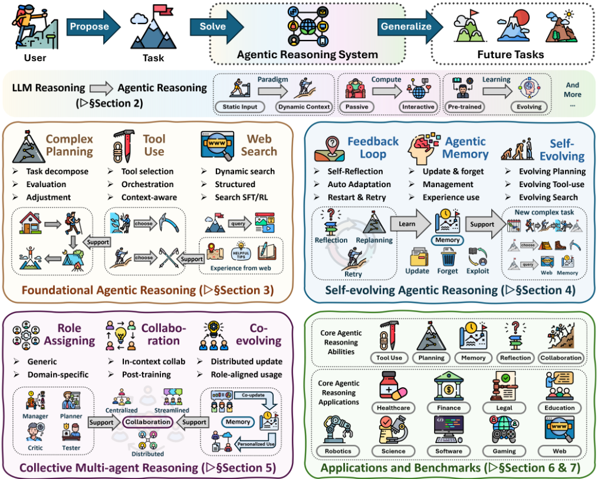
在本综述中，我们在智能体推理（Agentic Reasoning）框架下对这一演进进行系统化梳理：LLM 不再被动地生成序列，而是被重新定义为自主推理智能体（agent），通过与环境的持续交互进行规划、行动和学习。这种重新定义将推理与行动统一起来，把推理定位为感知、规划、决策与验证的组织原则。诸如 ReAct [5] 之类的系统将审慎推理与环境交互交替进行，工具调用框架使模型能够自主发起 API 调用，而基于工作流的智能体则动态编排子任务与可验证的动作 [5, 6, 7]。从概念上讲，这与从静态的一次性推理向不确定性下序贯决策的转变相呼应。与简单的输入-输出映射不同，这一范式要求智能体在长时域上进行规划、应对部分可观测性，并通过反馈主动改进 [8, 9, 10]。
2
| Definition of Agentic Reasoning |
|---|
| Agentic reasoning positions reasoning as the central mechanism of intelligent agents, spanning founda- tional capabilities (planning, tool use, and search), self-evolving adaptation (feedback, and memory-driven adaptation), and collective coordination (multi-agent collaboration), realizable through either in-context orchestration or post-training optimization. |
| Definition of Agentic Reasoning |
为了系统地刻画环境动态性，我们围绕智能体推理（agentic reasoning）的三个互补范围来组织本综述：基础能力、自我进化与集体智能，涵盖多样的交互式与动态场景。基础智能体推理（Foundational Agentic Reasoning）奠定了核心单智能体能力的基石，包括规划、工具调用与搜索，使智能体能够在虽然复杂但稳定的环境中运行。在这一范围内，智能体通过分解目标、调用外部工具并借助可执行动作验证结果来采取行动。例如，程序辅助推理（program-aided reasoning）[3] 将逻辑推导建立在代码执行之上；诸如 OpenHands [11] 之类的仓库级系统将推理、规划与测试整合到统一的循环中；而结构化记忆模块 [12, 13] 通过持久化中间推理轨迹以供复用，将事实性回忆转化为程序性能力。在这些基础之上，自我进化的智能体推理（Self-Evolving Agentic Reasoning）使智能体能够通过累积经验持续改进。该范式涵盖面向特定任务的自改进（例如通过迭代式批判），并将适应扩展到包括记忆与策略等内部状态的持久更新。智能体不再遵循固定的推理路径，而是发展出反馈整合与记忆驱动的适应机制，以在不断演变的环境中导航。诸如 Reflexion [14] 之类的基于反思的框架允许智能体批判并改进自身的推理过程，而诸如 RL-for-memory [15] 之类的强化学习形式化方法则将记忆写入与检索形式化为策略优化。通过这些机制，智能体将推理时推理与学习动态整合，在无需完整重训练的情况下逐步更新内部表示与决策策略。这种持续适应将推理与学习联系起来，使模型能够积累能力并跨任务泛化。最后，集体多智能体推理（Collective Multi-Agent Reasoning）将智能从孤立的求解器扩展到协作生态系统。多个智能体不再孤立运行，而是通过显式的角色分配（例如 manager-worker-critic）、通信协议和共享记忆系统进行协调，以实现共同目标 [16, 17]。随着智能体在子任务上专门化并相互改进彼此的输出，协作放大了推理多样性，使系统能够通过基于自然语言的多轮交互进行辩论、化解分歧并达成一致 [18, 19]。然而，这种复杂性也带来了稳定性、通信效率和可信性方面的挑战，因而需要结构化的协调框架和严格的评估标准 [20, 21]。贯穿所有层次，我们通过区分两种互补的模式来分析系统约束与优化设置，分别对应推理时编排 [5, 14, 22, 23, 24, 25] 与基于训练的能力优化 [26, 27, 28, 15]。上下文内推理（In-context Reasoning）专注于扩展推理时计算：通过结构化编排、基于搜索的规划和自适应工作流设计，它使智能体能够在不修改模型参数的情况下在复杂的问题空间中动态导航。相反，后训练推理（Post-training Reasoning）以能力内化为目标：它通过强化学习和微调将成功的推理模式或工具调用策略固化到模型权重中。二者共同为设计智能体提供了切实可行的路线图。在这一三层分类体系的基础上，智能体推理已开始支撑广泛的实际应用，从数学探索 [29, 30] 和 vibe coding [11, 31, 32] 到科学发现
3
本综述回顾了推理赋能的智能体（agentic）系统，在这类系统中，推理驱动自适应行为。我们通过两种互补的优化模式来分析这些系统：
我们的涵盖范围包括在单智能体与多智能体情境下将这些模式嵌入规划、记忆与自我改进的方法论。本综述总结了截至2025年的研究进展。
[33, 34, 35]、具身机器人 [36, 37, 38]、医疗健康 [39, 40] 以及自主网页探索 [41, 42]。这些应用展现出由领域特定数据模态、交互约束和反馈回路所塑造的各不相同的推理需求，由此催生了多样化的系统设计 [43, 44]，这些设计集成了规划、工具调用、搜索、反思、记忆机制与多智能体协调。另一方面，用于评估智能体推理的基准测试（benchmark）格局已经形成，其范围从隔离单项智能体能力的针对性测试，到在领域特定环境与场景中评估端到端行为的应用专用基准测试 [45, 46, 47, 48, 20, 21, 49, 50]。
总体而言，本综述将智能体推理方法综合为一个连接推理与行动的统一路线图。我们在基础推理、自演化推理与集体推理这三个互补范围内系统地刻画这些方法，同时区分上下文内（in-context）与训练后（post-training）两种优化模式。我们进一步通过代表性应用与评估基准测试为该路线图提供具体背景，说明不同的智能体推理机制如何在真实的领域与任务设置中被实例化和评估。最后，我们概述了开放性挑战与未来方向，指出了个性化、长时程交互、世界建模、可扩展的多智能体训练以及面向真实世界部署的治理框架等关键前沿。
本综述做出以下贡献：
4
| 0 | 1 | 2 | 3 |
|---|---|---|---|
| 1 Introduction | 1 Introduction | 1 Introduction | 1 |
| 2 From | LLM Reasoning to Agentic Reasoning | LLM Reasoning to Agentic Reasoning | 7 |
| 2.1 Positioning | Our Survey . . . . . . . . . . . . . . . . . . . . . . . | . . . . . . . . . . . . . . . 7 | |
| 2.2 . . . | Preliminaries . . . . . . . . . . . . . . . . . . . . . . . . . . | . . . . . . . . . . . . . . . 8 | |
| 3 | Foundational Agentic Reasoning | Foundational Agentic Reasoning | 10 |
| 3.1 | Planning Reasoning . . | . . . . . . . . . . . . . . . . . . . . . . . | 10 |
| 3.1.1 | In-context Planning . . . . . . . . . . . . . . . . . . . . . | . . . . . . . . . . . . . . . 11 | |
| 3.1.2 | Post-training Planning . . . . . . . . . . . . . . . . . . . | . . . . . . . . . . . . . . . 13 | |
| 3.2 | Tool-Use | Optimization . . . . . . . . . . . . . . . . . . . . . . . | . . . . . . . . . . . . . . . 14 |
| 3.2.1 | In-Context Tool-integration . . . . . . . . . . . . . . . . | . . . . . . . . . . . . . . . 14 | |
| 3.2.2 | Post-training Tool-integration . . . . . . . . . . . . . . . | . . . . . . . . . . . . . . . 16 | |
| 3.2.3 | Orchestration-based Tool-integration . . . . . . . . . . . | . . . . . . . . . . . . . . . 16 | |
| 3.3 | Agentic | 17 | |
| Search . . . . | . . . . . . . . . . . . . . . . . . . . . . . . | . . . . . . . . . . . . . . . | |
| 3.3.1 | In-Context Search . . . . . . . . . . . . . . . . . . . . . . | . . . . . . . . . . . . . . . 18 | |
| 3.3.2 | Post-Training Search . . . . . . . . . . . . . . . . . . . . | . . . . . . . . . . . . . . . 19 | |
| 4 Self-evolving Agentic | 20 | ||
| Reasoning | Reasoning | ||
| 4.1 | Agentic | Feedback Mechanisms . . . . . . . . . . . . . . . . . . . | . . . . . . . . . . . . . . . 20 |
| 4.1.1 | Reflective Feedback . . . . . . . . . . . . . . . . . . . . . | . . . . . . . . . . . . . . . 21 | |
| 4.1.2 | Parametric Adaptation . . . . . . . . . . . . . . . . . . . | . . . . . . . . . . . . . . . 22 | |
| 4.1.3 | Validator-Driven Feedback . . . . . . . . . . . . . . . . . | . . . . . . . . . . . . . . . 22 | |
| 4.2 | Agentic Memory . . . . . | . . . . . . . . . . . . . . . . . . . . . . | . . . . . . . . . . . . . . . 24 |
| 4.2.1 | Agentic Use of Flat Memory . . . . . . . . . . . . . . . . | . . . . . . . . . . . . . . . 24 | |
| 4.2.2 | Structured Use of Memory . . . . . . . . . . . . . . . . . | . . . . . . . . . . . . . . . 26 | |
| 4.2.3 | Post-training Memory Control . . . . . . . . . . . . . . . | . . . . . . . . . . . . . . . 27 | |
| 4.3 | Evolving | Foundational Agentic Capabilities . . . . . . . . . . . | . . . . . . . . . . . . . . . 27 |
| 4.3.1 | Self-evolving Planning . . . . . . . . . . . . . . . . . . . | . . . . . . . . . . . . . . . 27 | |
| 4.3.2 | Self-evolving Tool-use . . . . . . . . . . . . . . . . . . . . | . . . . . . . . . . . . . . . 28 | |
| 4.3.3 | Self-evolving Search . . . . . . . . . . . . . . . . . . . . | . . . . . . . . . . . . . . . 29 | |
| 5 Collective Multi-agent Reasoning | 5 Collective Multi-agent Reasoning | 5 Collective Multi-agent Reasoning | 29 |
| 5.1 Role Taxonomy of Multi-Agent Systems (MAS) | 5.1 Role Taxonomy of Multi-Agent Systems (MAS) | . . . . . . . . . | . . . . . . . . . . . . . . . 30 |
| 5.1.1 | Generic Roles . . . . . . . . . . . . . . . . . . . . . . . . | . . . . . . . . . . . . . . . 30 | |
| 5.1.2 | Domain-Specific Roles . . . . . . . . . . . . . . . . . . . | . . . . . . . . . . . . . . . 31 | |
| 5.2 | Collaboration and Division of Labor . . | . . . . . . . . . . . . . | . . . . . . . . . . . . . . . 34 |
| 5.2.1 | In-context Collaboration . . . . . . . . . . . . . . . . . . | . . . . . . . . . . . . . . . 35 | |
| 5.2.2 | Post-training Collaboration . . . . . . . . . . . . . . . . | . . . . . . . . . . . . . . . 36 | |
| 5.3 | Multi-Agent Evolution | . . . . . . . . . . . . . . . . . . . . . . . . | . . . . . . . . . . . . . . . 38 |
| 5.3.1 | From Single-Agent Evolution to Multi-Agent Evolution . | . . . . . . . . . . . . . . . 38 | |
| 5.3.2 | Multi-agent Memory Management for Evolution . . . . | . . . . . . . . . . . . . . . 39 | |
| 5.3.3 | Training Multi-agent to Evolve . . . . . . . . . . . . . . | . . . . . . . . . . . . . . . 42 | |
| 6 | Applications | Applications | 43 |
| 6.1 Math Exploration & Vibe Coding Agents | 6.1 Math Exploration & Vibe Coding Agents | . . . . . . . . . . . . . | 44 |
| 0 | 1 | 2 | 3 |
5
| 0 | 1 | 2 |
|---|---|---|
| 6.2 Scientific | Discovery Agents . . . . . . . . . . . . . . . . . . . . | . . . . . . . . . . . . . . . . 48 |
| 6.3 Embodied Agents . . | . . . . . . . . . . . . . . . . . . . . . . . | . . . . . . . . . . . . . . . . 51 |
| 6.4 Healthcare & Medicine | Agents . . . . . . . . . . . . . . . . . . | . . . . . . . . . . . . . . . . 54 |
| 6.5 Autonomous Web Exploration & Research | Agents . . . . . . . | . . . . . . . . . . . . . . . . 57 |
| 7 Benchmarks | 7 Benchmarks | 64 |
| 7.1 Core | Mechanisms of Agentic Reasoning . . . . . . . . . . . . | . . . . . . . . . . . . . . . . 64 |
| 7.1.1 . . . . . | Tool Use . . . . . . . . . . . . . . . . . . . . . | . . . . . . . . . . . . . . . . 64 |
| 7.1.2 . . . . . . | Search . . . . . . . . . . . . . . . . . . . . . | . . . . . . . . . . . . . . . . 66 |
| 7.1.3 | Memory and Planning . . . . . . . . . . . . . . . . . . | . . . . . . . . . . . . . . . . 67 |
| 7.1.4 | Multi-Agent System . . . . . . . . . . . . . . . . . . . . | . . . . . . . . . . . . . . . . 68 |
| 7.2 Applications of Agentic Reasoning | . . . . . . . . . . . . . . . | . . . . . . . . . . . . . . . . 70 |
| 7.2.1 | Embodied Agents . . . . . . . . . . . . . . . . . . . . . | . . . . . . . . . . . . . . . . 70 |
| 7.2.2 | Scientific Discovery Agents . . . . . . . . . . . . . . . . | . . . . . . . . . . . . . . . . 70 |
| 7.2.3 | Autonomous Research Agents . . . . . . . . . . . . . . | . . . . . . . . . . . . . . . . 71 |
| 7.2.4 | Medical and Clinical Agents . . . . . . . . . . . . . . . | . . . . . . . . . . . . . . . . 71 |
| 7.2.5 . . . . | Web Agents . . . . . . . . . . . . . . . . . . . . . | . . . . . . . . . . . . . . . . 71 |
| 7.2.6 | General Tool-Use Agents . . . . . . . . . . . . . . . . . | . . . . . . . . . . . . . . . . 72 |
| 8 Open Problems | 8 Open Problems | 72 |
| 8.1 | User-centric Agentic Reasoning and Personalization . . . . . | . . . . . . . . . . . . . . . . 72 |
| 8.2 | Long-horizon Agentic Reasoning from Extended Interaction | . . . . . . . . . . . . . . . . 73 |
| 8.3 | Agentic Reasoning with World Models . . . . . . . . . . . . . | . . . . . . . . . . . . . . . . 73 |
| 8.4 | Multi-agent Collaborative Reasoning and Training . . . . . . | . . . . . . . . . . . . . . . . 73 |
| 8.5 | Latent Agentic Reasoning . . . . . . . . . . . . . . . . . . . . . | . . . . . . . . . . . . . . . . 73 |
| 8.6 | Governance of Agentic Reasoning . . . . . . . . . . . . . . . . | . . . . . . . . . . . . . . . . 73 |
| 0 | 1 | 2 |
本综述的组织结构如下：
6
传统的大语言模型（LLM）推理通常被表述为针对静态输入的单样本（one-shot）或少样本（few-shot）预测任务。这些模型依赖于扩展测试时计算（test-time computation），通过增大模型规模或推理预算来提升准确率，却不具备交互、记忆或适应不断变化目标的能力。提示工程（prompt engineering）、上下文学习（in-context learning）和思维链（chain-of-thought, CoT）提示等方法使推理更加显式，但传统 LLM 仍然是在固定提示下运行的被动序列预测器。
相比之下，智能体推理（agentic reasoning）强调扩展测试时交互（test-time interaction）。智能体系统不再仅仅依赖内部参数，而是通过行动进行推理：调用工具、探索备选方案、更新记忆并整合反馈。这将推理转变为一个包含决策步骤、反思和从经验中学习的迭代过程。推理由此成为一个连接模型、记忆和环境的动态循环。
| Dimension | LLM Reasoning | ↔ | Agentic Reasoning |
|---|---|---|---|
| passive static input | ↔ ↔ | interactive dynamic context | Paradigm |
| single pass internal compute | ↔ | multi step ↔ with feedback | Computation |
| context window no persistence | ↔ ↔ | external memory state tracking | Statefulness |
| offline pretraining fixed knowledge | ↔ ↔ | continual improvement self evolving | Learning |
| Orientation prompt based reactive | ↔ ↔ | explicit goal planning | Goal |
| Dimension | LLM Reasoning | ↔ | Agentic Reasoning |
这一转变标志着一种概念上的转变：推理不再通过静态容量来扩展，而是通过结构化交互来扩展，这种交互使得跨时间、跨任务的规划、适应与协作成为可能。
尽管近期已有若干综述考察了大语言模型（LLM）推理或智能体架构 [51, 52, 53, 54, 55, 56, 57, 58, 59]，我们的工作专门聚焦于智能体推理（agentic reasoning），将其作为理解“推理即交互”的统一范式。我们将本综述定位于以模型为中心的推理与系统级智能的交汇点，旨在衔接此前关于推理机制与智能体架构的讨论。
与LLM推理综述的关系。现有的LLM推理综述主要研究如何在模型的内部计算过程中引出或增强推理。例如，Huang and Chang [51]、Chen et al. [52]、Xu et al. [53]、Ke et al. [54] 总结了思维链（chain-of-thought, CoT）、强化后训练（reinforcement post-training）与长上下文推理等提示与扩展技术，强调LLM如何通过推理时监督或后训练对齐学会更好地推理。这些工作提升了推理轨迹的内部表达能力，但通常仍停留在静态推理设定中，即推理在单次前向传播中展开，缺乏外部交互。相比之下，我们的综述考察推理如何超越文本生成，涵盖部署过程中的动态规划、自适应记忆以及反馈驱动的行为。
7
与AI智能体综述的关系。若干当代综述已开始从架构或系统视角探索基于LLM的智能体 [56, 57, 58, 59]。这些工作分析智能体如何运用强化学习、规划与工具调用模块在复杂环境中运行。例如，Zhang et al. [56]、Lin et al. [57] 关注面向智能体搜索与决策的强化学习，而 Fang et al. [58]、Gao et al. [59] 则强调从交互中持续学习的自演化与终身智能体系统。我们的关注点与这些视角形成互补，聚焦于这些架构所实现的推理过程，特别是交互、反馈与协作如何将静态推理转变为自适应推理。我们不将推理视为架构设计的隐式副产品，而是将其视为连接单智能体强化学习、多智能体协调与自演化智能的统一机制。
总而言之，我们的综述为智能体性（intelligent agency）提供了一个以推理为中心的视角。我们考察基础推理机制、后训练适应与长期自演化如何共同构成智能体推理的基础，阐明从静态预测到交互式、自适应且持续改进的智能的转变。
本小节将静态语言建模到智能体推理的转变形式化。为与引言中概述的三个层次维度——基础（Foundational）、自演化（Self-Evolving）与协作（Collaboration）——保持一致，我们将这些能力统一于单一的控制论框架之下。
智能体推理的形式化：潜空间视角。标准方法常常将智能体的上下文与环境状态混为一谈。我们将环境建模为部分可观测马尔可夫决策过程（POMDP），并引入一个内部推理变量，以揭示智能体策略的“思考-行动”结构。具体而言，我们考虑元组 ⟨X , O , A , Z , M , T , Ω , R , γ ⟩，其中 X 是潜在环境状态空间（对智能体不可观测），O 是观测空间（例如用户查询、API 返回），A 是外部动作空间（例如工具调用、最终答案），Z 是推理轨迹空间（例如潜在计划，可选择性地以思维链（chain-of-thought, CoT）的形式外显表达），M 是智能体的内部记忆/上下文空间（例如交互历史的充分统计量）。T 和 Ω 表示转移核与观测核，R 表示奖励，γ ∈ ( 0, 1 ) 为折扣因子。
在时间步 t，智能体以历史 ht = ( o ≤ t , z < t , a < t ) 为条件（即先观测到 ot，再生成 zt，随后生成 at ）。等价地，该历史可由内部记忆状态 mt ∈ M 来概括。关键在于，我们将外部动作与内部推理区分开来。我们将策略分解为
这一分解凸显了智能体系统的核心转变：在提交到 A（行动）之前，先在 Z 中执行计算（思考）。目标仍然是最大化期望回报 J ( θ ) = E τ [︀∑︀ t ≥ 0 γ t rt ]︀ 。
8
上下文推理：推理时搜索。在这一机制下，模型参数 θ 被冻结。智能体通过在 Z 上进行搜索来优化推理轨迹，以最大化启发式价值函数 ˆ v ( ht , z ) 。我们将推理建模为选择一条轨迹 τ = ( h 0, z 0, a 0, h 1, z 1, a 1, . . . ) 。诸如 ReAct [5] 之类的方法在交替出现的思考 z 与动作 a 上执行贪心解码。Tree-of-Thoughts（ToT [4]）及相关的 MCTS 风格方法将部分思考视为节点 u ∈ U（例如由 ( ht , zt ) 导出的某种表示），并搜索最优路径：
其中 ˆ v ϕ 是启发式评估器或验证器。这对应于在不更新策略参数的情况下在 Z 中进行规划。
该框架将这些多样化的方法统一为对智能体的显式记忆与产物（以及可选的参数）所进行的无梯度（gradient-free）或基于梯度（gradient-based）的优化步骤，从而闭合了经验与能力之间的回路。
智能体推理（agentic reasoning）源于单个智能体的行为。在讨论适应与协作之前，我们聚焦于单个智能体如何通过三个核心组件——规划（planning）、搜索（search）与工具调用（tool use）——将推理转化为结构化行动。在这一设定下，智能体并非被动的文本生成器，而是一个自主的问题求解器：它制定计划，通过检索或环境搜索探索备选方案，并利用工具执行有依据的操作。这些机制共同奠定了智能体推理的基础，将抽象的审慎思考与可验证的行动联系起来。
一个典型的基础工作流可以被视为一个迭代循环，其中交替进行规划（目标分解与任务形式化）、工具调用（调用外部系统或 API 以作用于外部世界）与搜索（用于决策支持的检索与探索）。推理作为贯穿这些阶段的组织原则，决定何时规划、检索什么以及如何行动，从而将静态推理转化为交互式决策。
通过分析这些组件，我们阐明了结构化推理如何将静态的大语言模型（LLM）提升为自主的、目标驱动的智能体。下一节将介绍自演化推理（self-evolving reasoning），其中反馈与记忆使这些基础能力得以持续适应与扩展。随后，我们考察集体推理（collective reasoning），其中多个智能体通过角色、通信与共享记忆进行协调，以实现超越个体的目标。
规划是智能行为的核心组成部分，它使智能体能够分解问题、对决策进行排序，并凭借前瞻性在复杂环境中导航。近期研究日益增多地探索大语言模型（LLM）背景下的规划，无论是将 LLM 作为自主智能体，还是作为更广泛系统中的组件。在本节中，我们将面向推理的智能体规划的现有工作归纳为六种方法论风格，其中每个类别都突出了一种支持复杂智能体推理的独特规划策略。
10
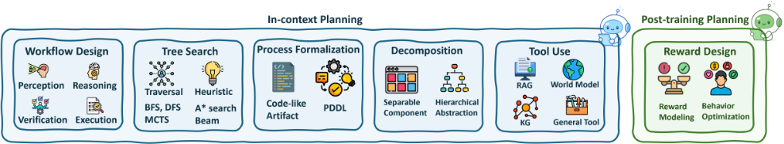
Workflow Design. Workflow-based approaches often emphasize structuring the overall planning process into distinct stages (e.g., perception, reasoning, execution, verification), which are either explicitly scaffolded or learned implicitly. For example, [72, 73, 71, 92] design planning pipelines that decompose task solving into subtasks, often leveraging a deliberate plan-and-act framework. Similarly, [2, 93, 75, 7] rely on structured prompting to sequentialize tasks and guide reasoning progression. Methods like [94] use structured transitions between diverse 'X-of-Thought' strategies. PERIA [95] combines perception, imagination, and action in a unified multimodal workflow. Others such as [96] explicitly target long-horizon planning through structured sequencing, while [97] build workflows for code-related planning.
These workflows are then grounded by a reactive controller that iteratively consumes the current state and interleaves reasoning with actions: in web automation, agents follow inspect-reason-act-observe loops [5, 49], with robustness improved by dynamically adapting in-context examples [98]; in code, agents decide immediate executions/API calls, read outputs or errors, and refine step-by-step [99, 78, 14, 79, 100, 101, 102, 103, 104]; in robotics, monitors trigger on-the-fly safety interventions and VLM-guided subgoal execution with real-time adjustment [87, 105]. This reactive workflow view unifies scripted stage design with online adaptation: the workflow provides interpretable structure and interfaces (what is done when), while the reactive loop supplies closed-loop grounding and error recovery (how it is done in context). The approach is broadly effective yet can accumulate errors over long horizons, motivating incremental verification and memory within the workflow to stabilize execution.
Tree Search / Algorithm Simulation. Tree-based search strategies, especially BFS, DFS, A*, MCTS, and beam search, have become prominent as interpretable and effective planning scaffolds. Several works simulate tree traversal algorithms to mimic deliberative processes: [4, 106, 107, 108] apply breadth- or depth-first strategies to explore structured thought trees. A*-like guided expansions appear in [109, 110, 111], providing heuristic-driven planning with state evaluation. Besides that, MCTS is heavily explored in agentic research: [112, 113, 114, 115, 116, 117, 118, 119, 120, 121, 122, 123] use MCTS or its variations for controlled exploration and improved reasoning fidelity. Beam search is leveraged in [124, 125, 126] to prune and prioritize reasoning trajectories efficiently. Other tree-search-inspired works include [127] which uses learned search policies and [128] which differentiates between fast (reactive) and slow (deliberative) planning. These methods mirror traditional algorithmic planning, grounding LLMs' search processes in classical decision-making frameworks.
11
| Method | Structure | Format | Tool |
|---|---|---|---|
| Modality I: Language Agents (e.g., Search Agents, Code Agents) | Modality I: Language Agents (e.g., Search Agents, Code Agents) | Modality I: Language Agents (e.g., Search Agents, Code Agents) | Modality I: Language Agents (e.g., Search Agents, Code Agents) |
| ReWOO [71] | Decomposed | Natural Language | None |
| Reflexion [14] | Sequential | Natural Language | None |
| LLM+P [72] | Sequential | Formal Language | None |
| IPC [73] | Sequential | Formal Language | None |
| ToT [4] | Tree | Natural Language | None |
| GoT [74] | Graph | Natural Language | None |
| AoT [75] | Graph | Natural Language | None |
| HTP [76] | Hypertree | Natural Language | Retrieval |
| RefPlan [77] | Tree | Constrained Space | None |
| Gorilla [78] | Sequential | Programming Language | Retrieval, API |
| CodeNav [79] | Sequential | Programming Language | Code Indexer, Code Search |
| PoG [80] | Graph | Natural Language | Knowledge Graph |
| Tool-Planner [81] | Sequential | Natural Language | Tool Cluster |
| Modality II: Visual/Multimodal Agents (e.g., GUI Agents, Embodied Agents) | Modality II: Visual/Multimodal Agents (e.g., GUI Agents, Embodied Agents) | Modality II: Visual/Multimodal Agents (e.g., GUI Agents, Embodied Agents) | Modality II: Visual/Multimodal Agents (e.g., GUI Agents, Embodied Agents) |
| VisualPredictor [82] | Tree | Formal Language | None |
| LLM-Planner [83] | Sequential | Formal Language | Object Detector, KNN |
| Agent-E [84] | Sequential | Formal Language | DOM Grounder, Screenshot |
| Agent S [85] | Hierarchical | Natural Language | API, Search, Memory |
| ExRAP [86] | Sequential | Natural Language | Memory |
| AESOP [87] | Reactive | Natural Language | Anomaly Detector |
| HRV [88] | Hierarchical | Formal Language | Symbolic Verifier |
| BehaviorGPT [89] | Sequential | Visual Features | World Model |
| Dino-WM [90] | Tree | Visual Features | World Model |
| FLIP [91] | Sequential | Visual Features | Language Model |
| Method | Structure | Format | Tool |
这种在层级结构上进行搜索的视角可以自然地映射到各领域系统中。在 Web 场景中，规划器-执行器架构以自然语言生成高层子任务树，并将叶节点绑定到以文档对象模型（DOM）为基础的动作上，通常还配备记忆来持久化上下文 [84, 129, 85]。对于代码智能体，层次化任务树和伪代码计划将问题递归地分解为可编译/可编辑的单元，而结构化流水线则在树中嵌入层次化强化学习（RL）或 MCTS，以选择有前景的编辑方案和验证路径 [76, 22, 130, 131, 132]。在机器人领域，行为树和高层目标分解将语言指令转换为由底层控制器和技能执行的子目标序列 [133, 134, 135, 136, 137]。
综上所述，层次化树搜索将计划合成（节点扩展、基于启发式/证据的选择）与计划实现（叶节点落地与反馈）耦合在一起，从而产生可解释的长时程智能体，它们能够在执行不可逆动作之前进行回溯、改进和验证，同时保持足够的灵活性，可纳入学习到的策略和记忆以提升效率与鲁棒性。
12
过程形式化。通过符号表示、编程语言或逻辑框架对规划进行形式化，可以确保组合性、可解释性和泛化能力。多项工作将计划编码为类代码工件或 PDDL 程序：[138, 139, 140, 97, 141, 142] 将符号逻辑或过程式编程融入 LLM 的提示或输出生成中。这些表示既支持下游工具执行，又能与经典规划器或机器人控制器更干净地对接。基于 PDDL 的形式化方法明确地将 LLM 规划与成熟的规划生态系统衔接起来，如 [139, 140] 所示。CodePlan [97] 强调利用程序合成为长时程推理搭建支架。这类形式化为智能体行为提供了结构化支架，并往往能增强所生成计划的可解释性与鲁棒性。
解耦/分解。解耦策略旨在将复杂规划模块化为若干可分离的组件，例如目标识别、记忆检索和计划精炼。值得注意的是，ReWOO [71] 显式地将观察模块与推理模块分离，以优化效率。类似地，[143, 144, 145, 146, 147, 142, 148] 等工作将推理拆分为可复用或层次化的抽象。[76] 通过超树促进层次化思考，而 [82] 使用符号谓词对世界进行抽象，以减轻规划负担。另一些工作，如 [149] 和 [119]，则通过潜变量或状态空间进行分解。这些分解不仅提升了易处理性，还与神经-符号混合框架相契合。它们在长时程或多智能体规划场景中尤为常见，例如 [150, 151]。
外部辅助 / 工具调用。许多系统借助外部结构或工具来辅助规划，包括检索增强生成（RAG）、知识图谱、世界模型以及通用工具调用。诸如 [80, 88, 181, 182, 143] 等知识增强框架将结构化表示（例如图、场景布局）注入 LLM 上下文中。RAG 风格的系统 [86, 183, 184] 检索相关知识以支持持续的指令规划。诸如 [112, 138, 185, 89, 90, 91, 186, 187] 等基于世界模型的智能体学习或利用环境模型来进行基于模型的规划。诸如 HuggingGPT [7]、Tool-Planner [81] 和 RetroInText [148] 等面向工具的框架使用外部 API 或模块化工具链来支持规划的执行。这些系统通常体现了智能体与环境的交互，并利用外部资源来支撑或增强 LLM 的能力。
奖励设计 / 最优控制。最后，将规划视为优化问题需要设计合适的奖励结构，并利用强化学习（RL）或控制理论工具求解最优行为。Reflexion [14]、Reflectthen-Plan [77] 和 Rational Decision Agents [188] 引入了基于效用的学习来引导规划行为。奖励建模出现在诸如 [189] 的工作中，而 [190] 等其他工作则强调奖励塑形。[191, 192, 193, 194] 明确地处理了最优控制问题，而 [195, 196, 197] 中则可见通过扩散模型进行的轨迹优化。诸如 [119, 198, 147] 之类的离线 RL 方法利用预训练的动力学模型或代价模型。这些工作中的控制理论取向通过在连续的、结构化的或学习得到的奖励空间上进行优化，与符号化或启发式方法形成互补。
13
| Method | Stage | Learning | Tool Strategy |
|---|---|---|---|
| Modality I: In-Context Integration | Modality I: In-Context Integration | Modality I: In-Context Integration | |
| ReAct [5] ART [199] | Inference Inference Inference | Prompting Few-shot Prompting | Interleaved reasoning-action Retrieved multi-step demos CoT with tool calls Light model for tool selection |
| ChatCoT [200] | |||
| GEAR [201] | Inference | Delegation | |
| AVATAR [202] | Inference | Contrastive | In-context tool reasoning |
| Modality II: Post-Training Integration | Modality II: Post-Training Integration | Modality II: Post-Training Integration | |
| Toolformer [6] | Post-train | Self-sup. + SFT | Self-generated API calls |
| ToolLLM [203] | Post-train | SFT | Large-scale API demos |
| ToolAlpaca [204] | Post-train | SFT | Simulated dialogues |
| ReSearch [205] | Post-train | RL + Reflec. | Adaptive retrieval reasoning |
| ReTool [206] | Post-train | RL | Reinforced code execution |
| ToolRL [207] | Post-train | RL | Multi-tool policy learning |
| Modality III: Orchestration-based Integration | Modality III: Orchestration-based Integration | Modality III: Orchestration-based Integration | |
| HuggingGPT [7] | System | Planner-Exec. | Multi-tool coordination |
| TaskMatrix.AI [208] | System | Planner | Massive API ecosystem |
| ToolPlanner [81] | System | RL | Plan-before-act framework |
| OctoTools [209] | System | Rule-based | Hierarchical orchestration |
| ToolExpNet [210] | System | Embedding | Experience-based selection |
| ToolChain* [211] | System | Search | A* decision over tools |
| Method | Stage | Learning | Tool Strategy |
工具调用优化是指 Agent 通过智能地调用外部模块来增强其自身固有能力的能力。这使得 Agent 能够克服诸如知识过时、无法执行精确计算或无法访问私有信息等局限性。核心挑战在于 Agent 对以下问题进行推理的能力：何时使用工具、从工具库中选择哪个工具，以及如何生成有效的调用。在本节中，我们考察现有的工具调用优化方法，这些方法大致可分为三种风格：上下文内工具集成（in-context tool-integration）、训练后工具集成（post-training tool-integration）以及基于编排的工具集成（orchestration-based tool-integration）。
The in-context demonstration paradigm is a training-free approach to empowering LLMs with new capabilities at inference time. This method leverages the remarkable in-context learning ability of modern LLMs, guiding a frozen, off-the-shelf model to perform complex tasks by providing carefully crafted instructions, examples, and contextual information directly in the prompt.
14
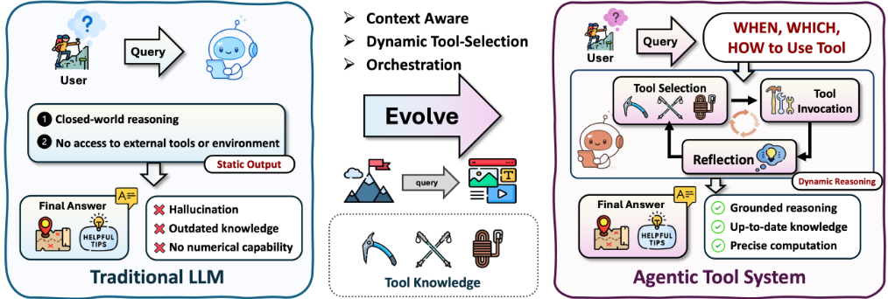
Interleaving Reasoning and Tool Use. The foundation of in-context agentic reasoning lies in augmenting the Chain-of-Thought (CoT) process with the ability to take action.[1]. ChatCoT [200] formalizes this paradigm by structuring reasoning traces as alternating "thought-tool-observation" steps in natural language, allowing LLMs to reflect on intermediate outputs and dynamically plan the next tool query. While CoT enables LLMs to break down problems into intermediate reasoning steps, it operates in a closed world, limited by the model's internal knowledge. The key innovation in agentic tool use is to interleave these reasoning steps with actions (tool calls), creating a dynamic loop that allows the agent to interact with external environments to gather information and execute tasks [212, 213]. ReAct [5] introduced the "Reasoning+Acting" synergy. This approach enables the model to use reasoning to create, track, and adjust its action plans, while the actions allow it to interface with and gather information from external environments like knowledge bases or the web. Similarly, ART [199] provides a structured approach by maintaining a library of successful task demonstrations. For a new task, ART retrieves a relevant multi-step exemplar and uses it as a few-shot prompt, guiding the LLM to follow a proven reasoning and tool-use path.
Optimizing Context for Tool Interaction. While the foundational interleaved loop is powerful, its performance degrades when agents must handle large or complex toolsets. A significant branch of research addresses this by optimizing the in-context information provided to the agent. Recent studies demonstrate that well-written tool documentation enables LLMs to utilize new tools in a zero-shot manner [214, 215]. This finding aligns with the key insight that LLMs, much like humans, benefit from clear and concise instructions. Alternatively, GEAR [201] introduces a computationally efficient, training-free algorithm that delegates the tool selection process to a small language model while reserving the more powerful LLM for the final reasoning step to reduce costs. AVATAR [202] enhances the robustness of this choice by prompting the agent to perform in-context "contrastive reasoning" before acting.
While these in-context methods are flexible, their performance is ultimately bounded by the inherent capabilities of the frozen LLM and the length of its context window. Consequently, subsequent research has focused on post-training methods.
15
通过强化学习（RL）掌握工具调用。近期研究 [234, 207, 235, 205, 236, 27, 237, 206] 在模型后训练阶段利用 RL，以超越单纯的模仿，在工具集成推理方面达到精通水平。随着 RL 的引入，模型借助结果驱动的奖励来改进其工具调用策略，通过试错学习何时调用、如何调用以及调用哪些工具 [205, 238, 206, 239]。例如，SWE-RL [235] 在大规模软件演化数据上优化代码编辑策略，不仅提升了软件问题解决能力，还提升了通用推理能力。ReSearch [205] 将搜索操作嵌入多跳推理链中，使其能够在复杂问答（QA）过程中进行自适应检索。ReTool 将实时代码执行集成到推理 rollout 中，在高级数学推理基准测试（benchmark）上取得了最优性能。ToolRL [207] 通过引入系统化的奖励设计以实现稳定且可扩展的多工具学习，从而将该范式推广到多样化的工具集。在上述各类设置中，已有研究表明，与仅使用监督微调（SFT）相比，RL 能够产生更鲁棒、更自适应、更可泛化的工具调用策略，并且往往能够有效迁移到域外任务 [240, 241, 242, 243, 244]。
在实际应用中，复杂系统内的工具调用往往超出单模型、单工具的设定，需要在多个工具之间进行编排（orchestration）才能完成复杂任务。这种编排通常涉及规划、排序以及跨工具依赖关系的管理，即确保中间输出得到恰当的传递与转换。若干早期工作 [7, 208, 245] 通过设计多工具协同使用的策略来探索这一方向，使系统能够解决任何单一工具都无法独立处理的多阶段任务。具体而言，HuggingGPT [7] 采用一个集中式 Agent，借助语言接口来规划调用哪些工具以及何时调用，从而能够解决需要依次使用多个工具的复杂任务。TaskMatrix.AI [208] 将基础模型与数百万个 API 相连接，利用模型生成任务求解大纲，并自动将某些子任务匹配到具备专门功能的现成模型和系统。ToolkenGPT [209] 通过在下一词元预测（next-token prediction）过程中将每个工具编码为一个特殊词元（token），为
面向编排的工具表示。除了设计编排流水线之外，另一条研究路线聚焦于对工具本身进行优化，以便在编排过程中实现更准确的工具选择、组合与协调。ToolExpNet [210] 将工具及其使用经验建模为一个编码语义相似性与依赖关系的网络，使大语言模型（LLMs）能够区分相似的工具，并在选择时考虑工具之间的相互依赖关系。T2Agent [250] 通过以标准化模板表示工具，并利用贝叶斯优化（Bayesian optimization）来选择与任务相关的工具子集，从而解决多模态虚假信息检测问题。结合在该缩减动作空间上执行的蒙特卡洛树搜索（Monte Carlo Tree Search），T2Agent 实现了高效的多源验证。ToolChain* [211] 将整个工具动作空间构建为一棵决策树，并应用带有任务特定代价函数的 A* 搜索来引导导航。这种表示方式能够高效地对高代价分支进行剪枝，并识别出最优的工具使用路径。ToolRerank [251] 通过针对已见工具与未见工具引入自适应截断，并采用层次感知的重排序来平衡集中性（针对单工具查询）与多样性（针对多工具查询），从而改进工具检索。
单智能体 Agentic 检索增强生成（Retrieval-Augmented Generation, RAG）系统将推理与控制嵌入到一个集中式 Agent 中，由该 Agent 统管整个检索-生成循环。与在生成前执行固定的一次性检索的传统 RAG 流水线 [252, 10, 253] 不同，Agentic RAG Agent 会基于实时推理需求动态控制何时检索、检索什么以及如何检索。这使得模型能够在推理中途调整检索策略、细化其查询，并更好地整合来自多个来源的证据。根据 Agent 在推理过程中如何选择、细化和整合检索到的内容，我们将单智能体 Agentic RAG 系统划分为三种不同的架构风格：上下文内（in-context）、后训练（post-training）和结构增强（structure-enhanced）的 Agentic RAG。
17
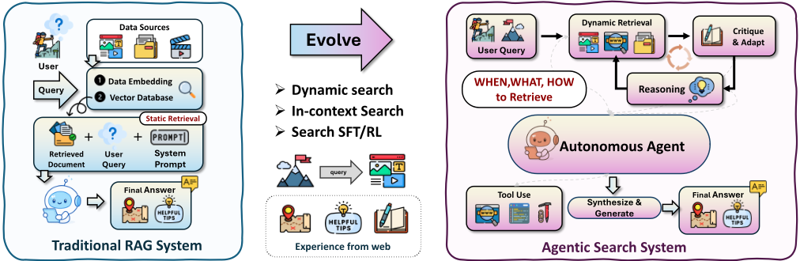
推理与搜索交替。上下文内 Agentic RAG 系统通过精心设计的提示策略，将检索行为直接嵌入语言模型的推理过程之中。这些方法并非通过训练使模型学会检索行为，而是引导模型在单次前向传递中于推理与搜索之间交替，通常借助少样本示例或特殊标记来实现。一个代表性的例子是 ReAct [5]，它将思维链（CoT）推理与 <Search> 等工具调用命令交织在一起，以动态调用外部 API 或知识源。Self-Ask [254] 和 IRCoT [213] 等扩展方法则超越了顺序式推理，通过提示模型递归地分解问题，并据此检索相应的子证据。较新的方法 [255, 183, 256, 263] 引入了反思式检索，即模型在每一步显式评估自己是否需要更多信息，仅在必要时才决定进行检索。这些方法无需额外训练，因而非常灵活且易于部署，但它们通常依赖提示工程，并且在跨不同领域时可能难以保持稳定性。
结构增强搜索。结构增强的 Agentic RAG 系统通过使单个 Agent 能够借助动态查询、工具调用和反思式自我监控，对知识图谱（KG）等符号化知识源进行推理，从而增强检索增强生成。与静态的 KG 检索器或查询执行器不同，这些 Agent 会自行决定何时访问结构化知识、如何构建基于图的查询，以及检索到的信息是否足以支撑推理轨迹的延续。Agent-G [262] 提出了一种模块化的 Agentic 架构，将非结构化文档检索与结构化图推理相整合，利用反馈回路和专用检索器模块来确保准确的多跳响应。MC-Search [263] 引入了五种规范的推理拓扑来建模多模态搜索增强推理过程，并提出了一种端到端的 Agentic RAG 与逐步评估流水线，用以评估模型在异构来源上的规划与检索保真度。类似地，GeAR [264] 将图扩展操作融入 Agentic 控制器，以应对复杂多跳查询中的挑战，从而增强结构化与非结构化来源之间的连贯性。在检索编排之外，ARG [265] 提出了一个完全端到端的 Agentic 框架，通过主动自我反思在知识图谱上进行推理。该模型自主决定何时进行检索，基于符号输入执行迭代式批判，并在图上展现出可解释的、逐步的推理行为。总体来看，这些系统标志着从被动的图访问向主动的、反馈驱动的符号推理的转变，凸显了结构化 Agentic RAG 在同时实现事实可靠性与可解释性方面的潜力。
18
| Method | Structure | Format | Tool |
|---|---|---|---|
| Modality I: In-Context Agentic Search | Modality I: In-Context Agentic Search | Modality I: In-Context Agentic Search | Modality I: In-Context Agentic Search |
| ReAct [5] | Interleaved | NL + Actions | Search API |
| Self-Ask [254] | Decomposed Sequential | NL Queries | Search API |
| IRCoT [213] Self-RAG | Reflective | NL + CoT | Search API |
| [255] | NL Self-check | Conditional Search | |
| DeepRAG [256] | Iterative | NL Feedback | Search API |
| Modality II: Post-Training Agentic Search | Modality II: Post-Training Agentic Search | Modality II: Post-Training Agentic Search | Modality II: Post-Training Agentic Search |
| Toolformer [6] | Sequential | Tool Tokens | APIs, Search |
| INTERS [257] | Sequential | Instructions | Search API |
| WebGPT [258] | Sequential | NL + Browser | Web Search |
| RAG-RL [259] | Decision | NL Policy | Evidence API |
| Search-R1 [27] | Iterative | NL + Tokens | Live Web |
| Deep- Researcher [260] | Multi-step | NL Trajectories | Browser Tools |
| ReSearch [205] | Step-wise | NL Steps | Search + Verifier |
| ReARTeR [261] | Reflective | NL Policy | Tool Cluster |
| Modality III: Structure-Enhanced Agentic Search | Modality III: Structure-Enhanced Agentic Search | Modality III: Structure-Enhanced Agentic Search | Modality III: Structure-Enhanced Agentic Search |
| Agent-G [262] | Modular | NL + Graph Ops | KG Query |
| MC-Search [263] | Multi-step | NL | Multimodal Search |
| GeAR [264] | Graph | Graph Ops | KG Expansion |
| ARG [265] | Reflective | NL + Symbols | KG Traversal |
| Method | Structure | Format | Tool |
自进化智能体推理（self-evolving agentic reasoning）是指智能体通过经验改进自身推理过程的能力。这一进化的核心在于两种基本机制：反馈（feedback）与记忆（memory）。反馈为自我修正与完善提供评价性信号，使智能体能够依据结果或环境响应来修订其推理策略；记忆则作为持久的底层载体，用于存储、组织和综合过往交互，从而实现跨任务的知识积累与复用。二者协同作用，将推理从静态过程转变为能够持续改进的动态自适应循环。
在规划（planning）、搜索（search）与工具调用（tool use）等基础能力之上，自进化智能体整合反馈与记忆，以精炼其内部推理策略、调整决策策略，并在多样化情境中实现泛化，且往往无需显式的外部监督。这种持续适应标志着向终身推理（lifelong reasoning）迈出的关键一步，并为下一节所探讨的集体智能（collective intelligence）奠定了基础。
智能体反馈机制（agentic feedback mechanisms）使模型能够迭代式地精炼其推理与行动，而非依赖一次性响应。通过引入自我批判（self-critique）、验证器引导（verifier guidance）或基于验证器的重采样（validator-based resampling），这些方法模拟人类的试错学习，并为自主自我改进奠定了基础。总体而言，它们通过三种不同的反馈模式运作：（1）反思式反馈（reflective feedback），模型通过自我批判或验证来修正其推理；（2）参数化适应（parametric adaptation），反馈被整合进更新后的模型参数中；（3）验证器驱动的反馈（validator-driven feedback），二值结果信号在无需内省的情况下引导重采样。
这三种模式界定了动态的推理时适应性、通过参数更新实现的持久学习，以及借助外部信号实现的高效修正这三者之间的连续谱系。它们共同凸显了现代智能体如何利用反馈来平衡灵活性、可靠性与效率。
20
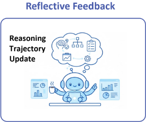
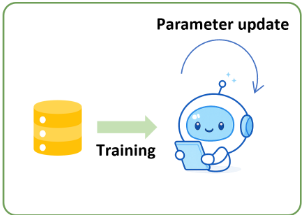
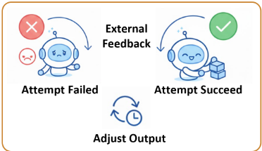
反思反馈（reflective feedback）方法通过在推理过程中修改推理流程来提升模型可靠性，而无需更新模型参数。这类方法将中间推理输出（例如思维链（chain-of-thought, CoT）或部分解）显式暴露出来，并引入额外的评估步骤，这些步骤会直接影响模型后续的生成方式。
早期的自我批评（self-critique）与推理依据精炼（rationale-refinement）方法 [14, 270] 通过显式的“生成—批评—修订”（generate-critique-revise）循环来实现反思。模型首先生成一个答案及其推理过程。随后，同一模型或一个通过单独提示扮演的批评者角色会分析该输出，以识别逻辑错误、缺乏依据的假设或缺失的步骤。批评意见被附加为上下文，用于生成修订版本，这一过程可以重复多次，或通过检索等外部证据加以增强。较新的自我改进框架 [271] 通过在多次交互中累积批评意见或失败案例，将反思反馈扩展到单次推理回合之外。这些方法不再只纠正单个响应，而是复用过去的反馈，通过提示精炼或经筛选的监督信号来引导未来的生成，同时在推理时仍然不进行直接的参数更新。基于搜索的推理策略 [272, 4, 74] 通过生成并比较多条候选推理路径来提升可靠性。这些方法通过随机采样或结构化搜索来探索解空间，然后使用投票机制、启发式评分或学习得到的评估器来选择或聚合输出。其改进来源于对多个备选方案之间的比较，而非对单一推理轨迹的显式修订。基于分解的提示方法 [2, 273] 将复杂问题重新表述为有序的、更简单的子问题序列。中间结果会在后续步骤中被复用，从而能够对推理进度进行部分检查并减少错误传播，即使没有引入显式的批评步骤也是如此。
总体而言，反思反馈通过引入额外的推理或比较步骤来改变推理时的推理轨迹。反馈用于在单个回合内引导生成，而模型参数保持不变。
21
参数化适应通过额外的训练将反馈融入模型参数，产生能够泛化到单个推理回合之外的持久行为改变。与反思反馈不同，这些方法将反馈信号转化为监督式或基于偏好的训练目标，从而更新模型的权重。
轨迹级监督微调方法 [274, 103] 将反馈附加到中间推理轨迹上，而不仅仅是最终答案。模型首先生成多步轨迹，随后由人类、辅助模型或自动验证器进行审查。错误的步骤会被纠正或替换，由此得到的富含反馈的轨迹被用作监督训练数据，促使模型内化改进后的推理模式。基于蒸馏的方法 [275] 进一步利用改进后的推理轨迹，其做法是在由更强教师模型生成的高质量思维链（chain-of-thought, CoT）或自我纠正的解答上训练学生模型。这一过程将结构化的推理行为迁移到更稳定或更高效的模型中，从而免除了推理时进行显式反思的需要。偏好对齐方法 [276, 277, 278] 以比较判断的形式引入反馈，用于区分受偏好的输出与不受偏好的输出。奖励建模或直接偏好优化（direct preference optimization, DPO）等训练目标会调整模型参数，使受偏好的行为更可能出现。尽管反馈通常定义在最终输出之上，但它隐式地塑造了产生这些输出的内部推理策略。近期研究表明，经验证增强的训练数据能够进一步提升跨领域的推理鲁棒性 [279, 280]。在这些设置中，轨迹会在训练前根据正确性或一致性信号进行过滤或修订，从而得到强调可靠推理模式的数据集。
总而言之，参数化适应将反馈直接嵌入到模型参数中，带来跨任务的持久改进。与推理时方法相比，这种持久性以额外的训练开销和灵活性的降低为代价。
验证器驱动的反馈利用外部的成功或失败信号来改进模型输出，而不修改模型的推理过程或参数。验证器可以是单元测试、约束检查器、模拟器或环境信号等，它对候选输出进行评估，判断其是否满足预定义的正确性标准。
基于重试的系统 [281, 282] 通过反复采样候选输出、直到某个输出通过验证来实现这一范式。模型生成一个完整的解决方案，将其提交给验证器，若验证失败则将其丢弃。后续的尝试是独立生成的，不会以关于先前失败的显式信息作为条件。这一策略在验证可靠且成本低廉的领域中尤为有效，例如程序合成与软件工程 [283, 284, 285]。生成的代码可以针对单元测试执行，从而提供明确无歧义的正确性信号。模型不断迭代，直到某个解决方案满足所有测试，即使缺乏显式的推理修正也是如此。类似的机制也出现在具身 Agent 与交互式 Agent 中 [136, 286]，其中动作序列被反复执行，直到环境发出任务完成的信号。失败的序列会被放弃，并尝试新的序列，而这完全依据外部的成功信号。一些混合方法在重试循环内引入轻量级引导，例如为最终导向成功结果的行为分配更高的奖励 [287]。然而，其主导机制仍然是通过外部验证进行选择，而非对推理步骤的修订或参数更新。
总体而言，在存在可靠验证器的情况下，验证器驱动的反馈为提升输出正确性提供了一种高效且可扩展的途径。其局限在于反馈是非诊断性的：它只纠正单个输出，却不解释失败原因，也不改变模型的推理行为。
| Method / System | Feedback Stage | Feedback Source | Update Target |
|---|---|---|---|
| I. Reflective Feedback | |||
| Reflexion [14] | Inference | Self-generated critique | Trajectory |
| Self-Refine [270] | Inference | Self-evaluation | Trajectory |
| Constitutional AI [278] | Inference | Normative rules | Trajectory |
| RLAIF [288] | Inference | AI verifier | Trajectory |
| SelfCheckGPT [289] | Inference | Cross-sample divergence | Trajectory |
| Zero-Shot Verification-CoT [290] | Inference | External verifier | Trajectory |
| ASCoT [291] | Inference | Vulnerability detection | Trajectory |
| MM-Verify [292] | Inference | Multimodal verifier | Trajectory |
| ReAct [5] | Inference | Action outcomes | Trajectory |
| PAL [3] | Inference | Code execution | Trajectory |
| WebGPT [258] | Inference | Web evidence | Trajectory |
| MemGPT [293] | Inference | Retrieved memory | Trajectory |
| Voyager [36] | Inference | Environment + memory | Trajectory |
| II. Parametric Adaptation | |||
| AgentTuning [274] | Training | High-quality trajectories | Model parameters |
| ReST [103] | Training | Critique-revision pairs | Model parameters |
| ReFT [294] | Training | Reflection-augmented data | Model parameters |
| Distill-CoT [275] | Training | Expert CoT | Model parameters |
| ReflectEvo [279] | Training | Reflection traces | Model parameters |
| Reasoning-CV [280] | Training | Verification signals | Model parameters |
| III. Validator-Driven Feedback | |||
| ReZero [281] | Inference | Binary validator | Output only |
| Retrials [282] | Inference | Acceptance signal | Output only |
| CodeRL [283] | Inference | Unit tests | Output only |
| LEVER [284] | Inference | Execution results | Output only |
| SWE-bench [285] | Inference | Test suite | Output only |
| SayCan [136] | Inference | Environment state | Output only |
| PaLM-E [286] | Inference | Environment feedback | Output only |
| Reflect-Retry-Reward [287] | Inference | Validator + reflection signal | Output only |
| Method / System | Feedback Stage | Feedback Source | Update Target |
23
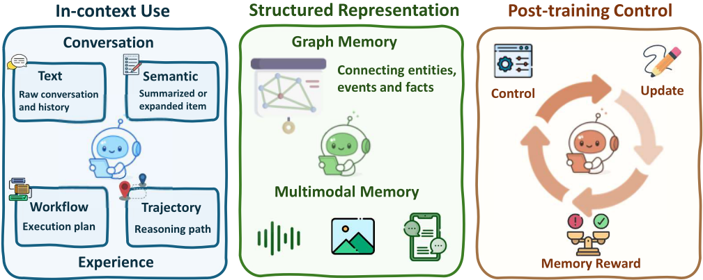
事实记忆。传统的 LLM 智能体记忆系统通常将记忆视为被动缓冲区，主要用于存储对话历史或近期观察，以应对 Transformer 模型上下文窗口有限的问题。典型例子包括稠密检索方法 [252, 319, 297]、LangChain 和 LLamaIndex 中的预定义模块 [296]，以及 MemGPT [293] 等受缓存启发的设计。这些方法通常检索语义相似的过往内容来增强提示，而不会影响智能体的内部推理。诸如采用可微分记忆的 RET-LLM [320]、基于控制器机制的 SCM [321]，以及面向长期记忆保持的 LOCOMO 和 LongMemEval 基准测试 [322, 323] 等改进进一步提升了召回能力，但在很大程度上仍然是静态的。这些系统往往依赖固定的启发式规则和非结构化的 token 列表 [297]，限制了其在涉及目标分解 [324, 143]、长期规划 [150] 或迭代式自我改进 [325] 等任务中的适应性。相比之下，新兴的智能体化记忆将记忆视为推理循环的组成部分，支持反思 [326] 与决策 [327]。Amem [24] 使 LLM 智能体能够自主生成上下文化的记忆描述、在相关经验之间建立动态链接，并随新信息不断演化记忆内容。类似地，Zep [306]、Mirix [328]、MemOS [13]、LightMem [299] 和 Nemori [300] 利用 LLM 自动生成上下文感知的记忆表示。除 LLM 驱动的方法之外，近期工作还探索了利用强化学习显式地训练智能体获取并组织事实记忆，例如 Memα [315] 和 Memory-R1 [15]，我们将在后续章节中详细讨论。
24
| Method / System | Setting | Format | Memory Type |
|---|---|---|---|
| I. Agentic Use of Flat Memory (In-Context) | I. Agentic Use of Flat Memory (In-Context) | I. Agentic Use of Flat Memory (In-Context) | I. Agentic Use of Flat Memory (In-Context) |
| LangMem [295] | In-Context | Text | Factual |
| LlamaIndex [296] | In-Context | Text | Factual |
| MemGPT [293] | In-Context | Text | Factual |
| MemoryBank [297] | In-Context | Semantic | Factual |
| Amem [24] | In-Context | Semantic | Factual |
| Workflow Memory [298] | In-Context | Workflow | Experience |
| MemOS [13] | In-Context | Semantic | Factual |
| LightMem [299] | In-Context | Semantic | Factual |
| Nemori [300] | In-Context | Semantic | Factual |
| ACE [301] | In-Context | Workflow | Experience |
| Reasoning Bank [302] | In-Context | Workflow | Experience |
| Dynamic Cheatsheet [303] | In-Context | Trajectory | Experience |
| Sleep-time Compute [304] | In-Context | Trajectory | Experience |
| Evo-Memory [25] | In-Context | Semantic | Experience |
| II. Structured Memory Representations | II. Structured Memory Representations | II. Structured Memory Representations | II. Structured Memory Representations |
| GraphRAG [305] | In-Context | Graph | Factual |
| MEM0 [12] | In-Context | Graph | Factual |
| Zep [306] | In-Context | Graph | Factual |
| Optimus-1 [307] | In-Context | Multimodal | Experience |
| RAP [308] | In-Context | Multimodal | Experience |
| M3-Agent [309] | In-Context | Multimodal | Factual |
| Mem-Gallery [310] | In-Context | Multimodal | Factual |
| Agent-ScanKit [311] | In-Context | Multimodal | Experience |
| III. Post-training Memory Control | III. Post-training Memory Control | III. Post-training Memory Control | III. Post-training Memory Control |
| Mem1 [312] | Post-training | Semantic | Factual |
| Memory-as-Action [313] | Post-training | Semantic | Factual |
| MemAgent [314] | Post-training | Semantic | Factual |
| Mem- α [315] | Post-training | Semantic | Factual |
| Memory-R1 [15] | Post-training | Semantic | Factual |
| Agent Early Experience [316] | Post-training | Implicit | Experience |
| Agentic Memory [317] | Post-training | Semantic | Experience |
| MemRL [318] | Post-training | Semantic | Experience |
| Method / System | Setting | Format | Memory Type |
25
经验记忆（Experience Memory）。Workflow Memory [298] 通过跟踪过程性轨迹来实现计划恢复与一致推理。Sleep-time Compute 使 LLM 智能体能够在用户交互之前预先计算并存储预期推理步骤，将记忆用作预备资源，从而有效地进行“离线思考”[304]。Dynamic Cheatsheet（DC）[303] 为黑盒模型配备外部记忆以存储可复用的策略，从而减少冗余推理。其他工作则探索了智能体记忆的互补范式。与此同时，工作流记忆（workflow memory）已成为另一种结构化方法，尤其适用于过程性和工具增强型任务。它在执行过程中显式地跟踪过程性轨迹，支持计划恢复、长期一致性以及可解释的动作链。原子推理（Atomic reasoning）[143] 提出在精简的生成空间中，对有限的可复用原子技能集合构建结构化轨迹，以减少虚假推理模式。上下文演化（Context Evolution, ACE）[301] 将上下文视为不断演化的操作手册（playbook），而非构建静态的结构化存储；而 Reasoning Bank [302] 则专注于复用失败的推理轨迹，以提升未来任务的表现。Evo-Memory [25] 综合了上述思想，在流式任务设置下对自演化记忆进行基准测试（benchmark），强调经验复用是有状态的、长时程智能体推理的核心能力。除事实记忆之外，Mirix [328] 进一步引入了程序性记忆组件来捕获可复用的动作模式，而 Agentic Memory [317] 和 MemRL [318] 则采用强化学习来优化经验记忆的获取与管理。
这标志着从静态缓冲区向结构化的、以推理为中心的记忆架构的转变。在这些智能体记忆系统中，记忆充当动态增长的上下文：智能体不仅记录过去的动作，还会随时间推移主动反思、编辑并改进其策略。
除了扁平化的记忆使用与控制之外，记忆的结构在实现复杂推理方面发挥着关键作用。近期的工作越来越多地探索结构化表示，例如语义图、工作流和层次树，并常常将其扩展到多模态设置中，以更好地捕获依赖关系和上下文关系。
基于图的表示为智能体中关系知识的组织提供了灵活的基底 [329]。GraphRAG [305] 作为一项基础性技术，通过图结构化推理来增强检索，从而实现更具上下文连贯性的多跳信息整合。在此基础之上，MEM0 [12] 和 Zep [306] 等智能体系统将记忆显式地组织为动态知识图谱，使智能体能够以更高的效率和更强的语义落地来存储、检索实体、属性及其关系，并对其进行推理。除图结构之外，结构化记忆还通过其他组织形式得到了探索。MemTree [330] 利用动态树状表示来分层组织与整合信息，而 AutoFlow [331]、AFLOW [332] 和 FlowMind [333] 等面向工作流的系统则在记忆中显式表示推理工作流，捕获子目标、工具调用和决策点的序列。
新的基准测试（benchmark）已将推理记忆推向多模态领域，在这些领域中，智能体需要在异构模态之间对信息进行落地、检索和复用。M3-Agent [309] 通过“看、听、推理”来评估视觉-音频-文本推理，而 Agent-Scankit [311] 提出了带有集成记忆模块的多模态智能体，用于自适应检索与落地。Optimus-1 [307] 提出了一种混合多模态记忆架构，将世界知识表示为层次化的有向知识图谱，并将过去的交互抽象为多模态经验池。RAP [308] 基于上下文相似性检索相关经验，从而实现多模态记忆的自适应复用。
26
这些结构化记忆格式将任务语义、时间依赖关系和多模态信号对齐，使智能体能够进行组合式推理，并在长时间交互中保持连贯的行为。随着任务复杂度的增加，记忆的抽象与组织对于构建鲁棒的通才智能体变得愈发关键。
反过来，记忆系统也可以由智能体自身的推理过程来控制。近期工作不再依赖固定的启发式规则来读写记忆，而是探索了智能体可控的记忆操作，即由智能体显式地决定存储什么、何时检索以及如何与记忆交互。这将记忆重新框定为一种策略目标：它不再是被动的缓冲区，而是一种由推理主动塑造的资源。
MemAgent [314] 将记忆覆写形式化为一个强化学习（RL）问题：智能体因保留被证明有用的信息、丢弃无关内容而获得奖励。通过采用新提出的 DAPO 算法，模型学会在对话过程中维持恒定大小的记忆，同时最大化未来效用。Mem1 [312] 提出了一种端到端的强化学习框架，其中智能体在各轮交互之间维护一个紧凑的共享内部状态，共同支持推理与记忆巩固。Memory-R1 [15] 通过引入双智能体设计进一步推进了这一方向：一个 Memory Manager 动态决定何时向记忆库中添加、更新或删除条目，一个 Answer Agent 则提炼出最相关的检索记忆以指导回复生成。Memα [315] 等近期工作还探索了基于 RL 的方法来控制智能体中多组件记忆的构建，为自适应记忆构建与推理控制提供了统一视角。Memory-as-Action [313] 将包括插入、删除和修改在内的记忆编辑直接集成到推理策略中，并提出了一种 Dynamic Context Policy Optimization 算法来处理由记忆操作导致的非前缀轨迹变化。Agent Learning via Early Experience [316] 通过自预测与反思使智能体能够从自身的交互轨迹中学习，进一步放宽了对奖励的依赖，从而在模仿学习与强化学习之间架起了桥梁。此外，Agentic Memory [317] 与 MemRL [318] 采用强化学习来优化经验性记忆的获取与管理。
总体而言，这些系统标志着向基于学习的记忆控制的转变：记忆的使用通过强化学习或模仿学习得到优化。通过将记忆管理集成到推理策略中，智能体变得更具适应性、更可扩展，并能够在动态环境中进行长时程决策。
Recent advances view planning not as a fixed reasoning routine but as an evolving capability. Instead of relying on static datasets or human-designed curricula, agents can autonomously generate tasks, learn from Agentic Reasoning for Large Language Models their own feedback, and adapt strategies through iterative interaction with the environment. This enables continuous improvement without external supervision.
27
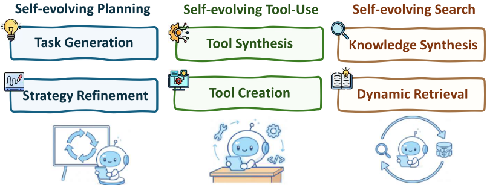
A representative direction is self-generated task construction. For example, SCA enables agents to alternate between generating problems and solving them, reusing successful trajectories for fine-tuning [334]. Selfrewarding frameworks further allow agents to assess their own outputs, producing high-quality training signals without human labels [335, 336]. Other works directly leverage execution feedback for online adaptation, such as SELF, SCoRe, PAG, TextGrad, and AutoRule, which transform natural-language critiques or traces into training rewards, enabling continual policy refinement [337, 338, 339, 340].
Beyond internal feedback, agents can also evolve through environment shaping. AgentGen constructs adaptive environments to induce curriculum learning [341], while Reflexion and AdaPlanner use self-reflective or adaptive strategies to refine plans at runtime [14, 342]. Self-Refine iteratively critiques and improves outputs [270], and SICA allows self-modification of code and reasoning tools [343]. From an RL perspective, RAGEN and DYSTIL model planning as a Markov Decision Process and optimize strategies with dense feedback [344, 345].
Together, these methods establish a self-improving planning loop, where agents generate their own tasks, shape their environments, and refine strategies, laying the groundwork for autonomous, open-ended planning evolution.
工具的创建与合成。上下文推理（in-context reasoning）的集大成体现，是 Agent 自主创建新工具这一涌现能力。这并非通过训练实现，而是通过提示一个冻结的大语言模型（LLM），使其在遇到现有工具集无法解决的问题时充当程序员来达成的。LATM 框架 [346] 使用一个强大的模型作为一次性的“工具制造者”（tool maker），并使用一个更廉价、轻量的模型作为频繁的“工具使用者”（tool user），从而分摊了创建成本。为了实现超越通用 API 局限的专门化，CRAFT [347] 和 CREATOR [348] 等框架会生成针对特定领域量身定制的自定义工具。ToolMaker [349] 则更进一步，能够将整个公开代码仓库转换为可用的工具，使 Agent 能够即时利用复杂的、由人工编写的代码库。
28
搜索在智能体推理（agentic reasoning）中扮演着核心角色，它使模型能够在庞大且不断演化的记忆空间中检索、选择并综合相关知识。在早期系统中，搜索通常是静态的——建立在固定的检索启发式规则或基于相似度的稠密检索器之上 [252, 255, 297, 293]。这些方法利用检索到的信息来增强提示，但缺乏对记忆如何演化以及搜索策略如何随时间改进的自适应控制。
近期研究越来越多地将搜索与记忆联系在一个协同演化的循环中：Agent 在任务执行过程中持续更新其记忆库，同时动态调整如何在这份不断演化的知识之上执行搜索。MemGPT [293]、MemoryBank [297] 和 Workflow Memory [298] 等 Agent 记忆系统已经展示了检索到的信息如何被综合并重新插入记忆，从而逐步提升检索质量。Dynamic Cheatsheet（DC）[303] 进一步证明了可复用策略如何在多次查询之间被积累和利用，有效地将静态搜索转变为一种能够随 Agent 经验不断演化的“活的”检索基底。
演化的记忆库。与基于静态索引的检索不同，自演化 Agent 通过反思（reflection）和执行后更新来主动改进其记忆库。Reflexion [14] 允许 Agent 批判自身的推理轨迹并存储提炼出的洞见，从而提升未来搜索的相关性。Reasoning Bank [302] 与上下文演化方法 [301] 则显式地重构记忆表示，使检索结果与不断演化的问题求解策略保持一致，实际上使检索目标本身随时间推移而具备自适应性。
动态搜索与综合。除了记忆更新之外，搜索策略本身也可以通过动态优先级排序与综合而演化。结构化的记忆表示——例如工作流 [331, 332, 333] 和知识图谱 [329, 305, 12, 306]——提供了语义脚手架，使多跳（multi-hop）搜索与组合式搜索成为可能，从而在更长的时间范围上支持更丰富的推理。MemOS [13] 和 Memory-as-Action [313] 等系统则更进一步，将搜索决策直接整合进推理策略之中，使检索目标、策略与来源能够随 Agent 经验的积累而协同适应。
总体而言，自演化搜索将检索从一种静态的实用工具转变为推理循环中一个持续自适应的组成部分。通过演化记忆库、动态调整搜索策略，并将检索结果综合为结构化知识，Agent 能够在更长的时间跨度内维持更相关、更结构化且更具可操作性的信息。
在单智能体基础之上——即推理在统一的感知-行动回路中支持规划、搜索与工具调用——多智能体推理将这些原则扩展到协作场景中。在多智能体系统（multi-agent system, MAS）中，多个推理 Agent 相互交互，共同解决复杂任务。Agent 并非同质的问题求解器，而是承担互补的角色，例如由 Manager 负责任务分解、Worker 负责执行、Verifier 负责评估，从而实现专业化与认知劳动的分工。这种角色分化标志着迈向集体智能的第一步，在集体智能中，推理分布于多个 Agent 之间并得到协调。
在角色分配之外，多智能体推理的本质在于这些 Agent 如何协作、通信与协同演化。协作模式（collaboration schemas）定义了推理轨迹如何交换、冲突如何解决，以及如何维护共享记忆以实现对齐。通过这样的交互，推理从个体过程转变为分布式的迭代循环，其中 Agent 相互完善彼此的输出，并共同收敛到更优的解决方案。
29
与单智能体系统相比，多智能体推理带来了新的挑战，需要在系统层面重新思考推理：
这些挑战促成了我们如下的分析结构。第 5.1 节考察多智能体系统的角色分类体系，从通用的组织角色到领域特定的专业化角色。第 5.2 节聚焦于协作与分工，包括上下文内（in-context）与训练后（post-training）的协调策略。最后，第 5.3 节探讨记忆如何使多智能体系统随时间演化并保持集体一致性。这些视角共同提供了推理如何从个体 Agent 扩展至自适应、协作式智能的统一图景。
在本小节中，我们首先总结多智能体系统（MAS）中经常出现的通用角色。随后，我们介绍当 MAS 应用于不同领域（例如软件工程、金融、法律活动、教育、医疗保健、生物医学以及音乐应用）时，不同角色所承担的具体功能。
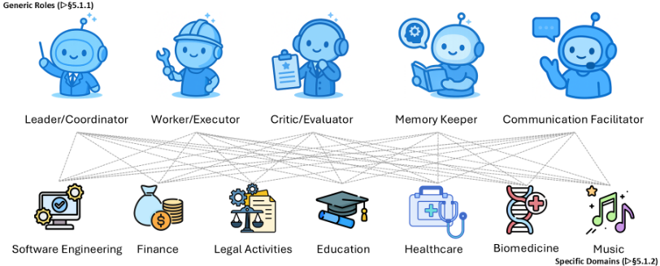
30
between agents with overlapping or contradictory outputs. In practice, this role often manifests itself as a meta-controller that monitors the progress of other agents and ensures that execution adheres to an overarching plan.
除通用 Agent 角色之外，领域特定任务往往还需要专门化的功能。这些角色反映了特定行业中的专业实践，并能够自然地映射到多智能体系统（MAS）架构之上。
软件工程：在软件工程领域，MAS 通常映射为与软件开发生命周期相对应的角色：架构师、开发者、代码审查员/测试员、CI 编排器以及发布经理 [17, 350]。其设计理念在于以一种能够平衡创造性、验证、自动化与治理的方式来分配职责，正如工业界的软件实践一样。
先前的工作已经展示了类似的映射，例如 MetaGPT [17] 将开发过程分解为产品经理、架构师和工程师 Agent。ChatDev [350] 进一步强调专门化 Agent 之间的沟通协作，以支持需求分析、编码和测试。最近，自演化协作网络扩展了这一范式，使 MAS 能够在整个软件生命周期中动态地重组并优化其角色 [351]。MAS 的一种变体也被应用于高性能计算（HPC）领域 [352]。通过围绕这些阶段来构建 MAS，该架构获得了与专业工程工作流相同的鲁棒性和可扩展性。
金融：金融领域大致可以分解为四种典型角色：分析师、风险经理、交易员/执行 Agent 以及合规官 [353, 354]。这种划分反映了金融组织既有的制度设计，即通过职责分割来在利润创造与系统性稳定之间取得平衡。
总体而言，这种分层生态与现实世界中的金融机构相呼应，在后者之中，专业化分工与相互制衡不可或缺。MAS 在金融领域的最新进展同样体现了这种分层生态。R&DAgent-Quant [355] 展示了 Agent 如何在因子发现与量化策略联合优化方面实现专门化。FinRobot [356] 提供了一个面向金融应用的开源多智能体平台，体现了对模块化与可扩展性的实际需求。PEER [357] 引入了专家化与调优方法，使 MAS 能够适应领域特定的职责，而 FinCon [358] 则强调了概念性言语强化在增强决策制定与合规性方面的作用。这些工作共同凸显了 MAS 能够复现现实世界金融机构的专业化分工、制约与平衡机制。
法律活动：多智能体系统还被设计用来对法律实践中固有的协作与对抗过程进行建模，并通过分配角色来处理咨询、推理与论证。
教育：在教育领域，MAS 正被开发用于通过在专门化 Agent 之间分配教学功能，来提供个性化且自适应的学习体验。
这些系统表明，研究正转向构建智能化、自适应的平台，以支持教育工作者，并为学生提供更有效、更具吸引力且更加个性化的学习历程。
医疗健康：在医疗健康领域，多智能体系统的结构设计旨在模拟临床与研究工作流程，将复杂任务分配给专门化的 AI Agent。
其他诸如 MMedAgent 和 MedAgent-Pro 的框架专注于编排专门的医疗工具，利用一个中央 Agent 来规划动作，并汇总来自各种基于工具的 Agent 的结果，以处理多模态数据 [39, 368]。
33
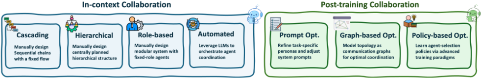
生物医学：在生物医学领域，尤其是在药物与材料发现中，多智能体系统（MAS）旨在通过分配能够体现设计、测试与改进这一迭代循环的角色，来实现科学过程的自动化与加速。
在从头分子设计（de novo molecule design）中，关键角色包括负责生成新结构的 actor（或称 reasoner）、负责评估化学性质的 evaluator，以及负责根据结果改进后续假设的 self-reflector。具体而言，actor Agent 提出新的候选分子，随后将其传递给 evaluator Agent。Evaluator 使用计算化学工具计算结合亲和力与合成可及性等性质，从而提供定量反馈 [369]。这些反馈随后由 self-reflector Agent 进行分析，以更新系统在下一代循环中的策略，形成一个由反馈驱动的优化过程 [370]。
类似地，LIDDIA 扮演“数字化学家”的角色，其包含 Reasoner、Executor、Evaluator 和 Memory 组件，用于在药物发现过程中进行导航，并在探索新化学空间与利用有前景的候选分子之间取得平衡 [369]。为了简化机器学习工作流的构建，DrugAgent 使用 LLM Planner 和 LLM Instructor 来自动化诸如 ADMET 预测等任务的编程 [371]。在基因组学中，GenoMAS 通过引导式规划框架编排六个专门化 Agent，以分析复杂的基因表达数据，将结构化工作流的可靠性与自主 Agent 的适应性相结合 [372]。
音乐：在音乐创作这一创意领域，多智能体系统（MAS）正被探索用于将复杂的音乐创作过程分解为协作性的专门角色。像 ComposerX 这样的系统可能包含一个指挥 Agent，负责解读高层用户提示并监督整个项目；一个旋律 Agent，负责生成主要的音乐主题；一个和声 Agent，负责创作辅助性的和弦进行；以及一个节奏 Agent，负责奠定打击乐与时间层面的基础。这些 Agent 将迭代式地交互，由指挥 Agent 综合它们的输出并提供反馈，以确保不同的音乐层次协调一致，并与最初的创作愿景保持一致。这类似于人类管弦乐队或乐队的协作过程，通过分配创作职责来实现复杂而和谐的最终作品 [373]。
协作与分工构成了现代多智能体（multi-agent）系统中的一个核心组织原则。近期的相关工作不再将 Agent 视为同质的组件，而是强调如何在专门化的 Agent 之间对职责进行分解与协调，以提升效率与鲁棒性。从这一视角出发，现有方法大致可以沿两个维度加以组织。上下文内协作（in-context collaboration）关注的是在推理时被指定或诱导产生、且无需额外训练的协调策略。
34
训练后协作（post-training collaboration）则通过学习或搜索来优化 Agent 角色、交互结构或路由策略。此外，Agentic 路由（agentic routing）可以被视为这种分工的一种特例，其中路由决策根据任务需求，将认知与计算显式地卸载到不同的 Agent 上。
Agent 路由。与 LLM 驱动的编排密切相关，一系列工作将 Agent 路由显式地建模为一个决策层，负责为每个查询或子任务选择合适的专家。例如，AgentRouter [386] 提出了一种由知识图谱引导的路由器，利用结构化的任务语义将问题分派给相关的 Agent，从而在无需修改各个 Agent 的情况下实现有效的协作式问答。类似地，Talk to Right Specialists [387] 将路由与规划构建为一个统一的推理时过程，其中控制器基于中间推理状态，动态地将子任务分配给领域专精的 Agent。这些方法凸显出，Agentic 路由本身可以被看作分工在推理时的一种实现，其中认知被选择性地卸载到专门的 Agent 上。
35
心智理论增强的协作。另一条有趣的研究路线是心智理论（Theory of Mind, ToM），它指的是 Agent 推断并推理其他 Agent 的信念、意图与心理状态的能力。Li 等人 [388] 首次表明，在一个合作式文本游戏中，为 LLM Agent 配备显式的信念状态表示，既能提升协作性能，也能在准确率上超越无 ToM 的 LLM 基线。在此基础上，Hypothetical Minds [389] 将 ToM 构建为一个针对其他 Agent 策略的模块化假设生成与精炼循环，而 MindForge [390] 则将具备 ToM 意识的推理扩展到具身协作学习。与此并行，Wu 等人 [391] 对 LLM 如何编码 ToM 给出了机制层面的解释，识别出一些稀疏的参数模式，对这些模式的扰动会选择性地破坏社会性推理。沿着这一方向进一步推进，ToM-agent [392] 通过对交互对象信念的反事实反思来增强 LLM 生成式 Agent，而 BeliefNet [393] 则提供了一个以 ToM 为中心的联合动作模拟器，其中具身 Agent 基于嵌套的信念状态采取行动。
在多智能体系统中，Agent 提示（或角色设定，即 persona）与交互拓扑的设计，在决定系统解决复杂任务的能力方面起着关键作用。近来，在后训练阶段对这些组件进行优化已成为一个重要的研究方向。根据优化目标的不同，现有研究大致可分为两条路线：提示优化与拓扑优化。
多智能体提示优化。多智能体系统中的提示优化关注的是：Agent 角色、工作流与反馈应如何编码到提示中，以实现可靠的协调与更强的任务性能。例如，AutoAgents [16] 将提示优化从单 Agent 场景扩展到多 Agent 团队，通过各 meta-agent 之间的结构化对话来细化角色专门化与执行计划。SPP [18] 引入了一种认知协同者（cognitive synergist），在面向知识密集型与推理密集型任务的多智能体协作过程中动态选择多个 persona，使互补的专业能力得以涌现。DSPy Assertions [394] 提出了 LM Assertions，其既可以是硬断言（Assert），也可以是软断言（Suggest）。当这些断言被违反时，会利用错误输出与错误轨迹触发回溯和提示修订。在编译过程中，该机制自举出正例与反例以强化少样本提示，从而同时提升召回率与准确率。MASS [395] 证明提示往往是多智能体系统（MAS）性能的主导因素，并进一步应用自动提示优化 [396]，通过纳入局部与全局拓扑信息，以细粒度的方式精炼每个 Agent 的提示。
至于拓扑优化，目前已出现两类研究，各自沿着相对独立的优化路径推进。第一类工作将多智能体拓扑视为通信图，利用基于图的方法来寻找在受限通信开销（即有限的图规模）下仍能取得强劲性能的最优结构。第二类则采取基于策略的视角，采用多种训练范式，借助专门设计的奖励或监督信号来学习 Agent 选择策略。通过迭代地、基于策略地选择后续 Agent，这些方法旨在逐步构建出能带来最优整体性能的拓扑。我们将在接下来的段落中更详细地讨论这两类方法。
基于图的拓扑生成。大量工作将多智能体系统（MAS）建模为图，其中 Agent 作为节点，Agent 之间的通信构成边。如此一来，MAS 设计便转化为学习通信/协调拓扑的问题。这些工作大致可划分为以下三组。
图生成。这类方法旨在通过自适应地生成任务条件化图，从零开始构建通信拓扑。GommFormer [397] 采用编码器-解码器框架，通过对图表示的连续松弛来学习通信图，并在带宽约束下端到端地优化拓扑。G-designer [398] 从一个带有虚拟任务节点的任务锚定网络出发，随后使用变分图自编码器解码出查询自适应的通信图。MCGD [399] 构建了一个具有连续节点属性与离散边属性的稀疏协调图，并在边上执行类别扩散、在动作上执行各向异性扩散，以捕捉结构多样性。
36
图剪枝。这类工作从稠密的协作图出发，旨在将其剪枝为紧凑且适合任务的流水线，同时保持效用并降低 token 与计算成本。例如，AgentPrune [400] 首先将多智能体系统（MAS）问题形式化为时空图稀疏化问题，然后应用一次性幅度剪枝来学习稀疏而有效的流水线。AGP [401] 学习一种双重剪枝策略，即在边上软剪枝、在节点上硬剪枝，以获得针对每个查询的拓扑。G-Safeguard [402] 将剪枝作为一种安全机制引入。它将通信边视为搜索空间，利用图神经网络识别风险节点，并基于模型驱动的阈值应用确定性规则来剪除这些节点的外向边，从而防御系统免受对抗攻击。
拓扑搜索。这一研究方向通过在智能体算子与通信边上搜索来探索图空间，以识别有效的流水线。具体而言，AFlow [332] 在固定的算子库上利用蒙特卡洛树搜索实现多智能体工作流设计的自动化。MASS 预定义了一些具有影响力的图模体，例如辩论与工具调用，然后在该剪枝后的模体子集内实施拓扑搜索。随后，MASS [395] 在该拓扑上执行提示搜索以最大化性能。MaAS [403] 用一个构建在分层算子选择之上的概率性“智能体超网”取代单图搜索，并使用控制器采样查询条件化的子图。DynaSwarm [404] 将设计空间从单一优化通信图扩展为候选结构的组合。它采用 Actor-Critic（A2C）优化来精炼该组合，并引入一个轻量级图选择器，为每个实例选择最合适的拓扑。GPTSwarm [68] 将搜索空间形式化为计算图内的智能体间连接。它将离散拓扑松弛为连续的边概率，并利用强化学习来优化由此得到的连接方案，从而实现灵活且自适应的图结构。
人类偏好信号。这一研究方向以源自人类的反馈来替代或增强环境奖励，使行为与人类意图对齐，涵盖在线与离线两种场景。例如，M3HF [416] 将人类输入组织为多阶段反馈（例如标量评分、成对比较和自然语言理由），并由 LLM 将其处理为奖励塑形信号。O-MAPL [417] 提出了一种端到端的基于偏好的学习框架，直接从离线偏好数据中学习 Q 值，从而绕过了“先训练奖励模型、再进行强化学习”的两阶段流程。
虽然自进化智能体使单个模型能够通过交互与反馈持续改进，但许多现实世界的应用需要由多个智能体协作所支撑的集体智能。因此，近期研究将自进化从涵盖规划、工具调用与搜索进化的单智能体场景 [14, 342, 270, 344, 36] 扩展到多智能体协同进化，其中适应性在分布式智能体之间涌现 [332, 418, 419, 420, 421]。除了对模型参数、记忆、提示与工具的进化 [12, 422, 423, 424] 之外，多智能体进化还进一步聚焦于共享记忆、通信机制与协作协议 [395, 421, 298]。
因此，多智能体记忆必须沿架构、拓扑、内容与管理等维度协同进化，并依托层次化、角色感知的架构 [425]、受治理的分布式存储拓扑 [426, 427]、模块化且按任务结构化的记忆内容 [328, 428]，以及针对压缩、验证与持续更新的主动管理机制 [429, 430]，从而确保协作的一致性与可扩展性。
由此，目标从优化单个智能体的能力，转向提升多个智能体在复杂、长时程任务上的集体性能 [332, 418, 419, 70]。
虽然从单智能体进化到多智能体协同进化的转变将适应的空间维度从单个模型扩展到了集体，但进化的时间维度同样至关重要。除了确定谁在进化（单个智能体还是种群）之外，近期研究还探讨了智能体在交互过程中应当何时适应以及以多快的速度适应。这一视角引出了一个互补的分析轴，将短时程的回合内更新与长期的跨回合改进区分开来，通常称为测试时内进化（intra-test-time evolution）与跨测试时进化（inter-test-time evolution）。我们对这些自进化行为的时间模式进行了总结。
38
测试时内进化是指智能体在任务执行期间进行适应与改进的能力，使其在面对未见状态或意外反馈时能够即时纠正失败并完善策略。与静态推理流水线不同，该范式将自我反思、动态规划、记忆重写乃至局部微调嵌入执行循环之中。代表性工作利用自然语言自我批评 [14, 270] 与运行时自适应规划 [342, 431]，在无外部监督的情况下生成纠正信号。Reflexion [14] 允许智能体存储提炼后的反思反馈以立即改进行为，而 AdaPlanner [342] 则基于环境失配检测在轨迹中途动态修订并重新规划。在上下文适应之外，测试时监督更新 [432] 与测试时强化学习（TTRL）[433, 434] 等方法在遇到困难案例时直接修改模型行为，通常借助问题变体生成与针对性优化来实现。这些方法表明，推理时的性能可以在单个回合内获得提升，从而形成短时程的适应循环，模型在其中边求解边学习，而非仅仅执行固定策略。
测试间演化（inter-test-time evolution）将自我改进过程扩展到跨任务学习，即在某一任务中所做的适应能够被巩固并迁移到未来任务中。这使得智能体能够在终身交互流中积累持久且可泛化的能力。一种突出的范式是离线自蒸馏（offline self-distillation），即智能体先生成响应，再通过自我评估对其进行精炼，然后将其用于监督微调，例如 SELF [337]、STaR [435] 和 Quiet-STaR [436]。这些方法将最初不正确的推理转化为高质量的标注数据，从而为未来的性能提升提供支撑。此外，诸如 RAGEN [344] 和 DYSTIL [345] 等在线强化学习框架基于密集的交互反馈持续更新策略，使智能体能够在长时程中逐渐内化复杂的决策策略。测试间演化还可以引入自动调整任务难度与环境复杂度的课程机制 [437, 438]，以及通过记忆演化实现经验结构化，以保存所积累的推理启发式知识 [439, 440, 298]。这种时间模式侧重于稳定的长期改进，将来自单个任务的短暂修正转化为跨多样任务分布的持续能力增长。
为支持这些新能力，相关机制从基于个体奖励或反思的适应 [337, 338, 339] 演进为多智能体强化学习与博弈论协同优化 [419, 420]，使协作结构能够在不断演化的任务需求下实现自组织。此外，记忆驱动的多智能体演化（例如共享工作流记忆或知识图谱）有助于在不同回合（episode）之间维持可累积的群体智能 [298, 13]。总体而言，多智能体演化将孤立的自我改进循环转变为具备自我纠错、自组织和社会学习能力的自适应智能生态系统。这一转变标志着向人工集体智能迈出的关键一步，在这种智能形态中，协作动态驱动着超越任何单个智能体能力的持续进步 [395, 332, 418, 441]。
与单智能体场景相比，多智能体 LLM 系统为记忆设计带来了独特的挑战。除了维护单个智能体的局部上下文之外，它们还必须捕获智能体间的交互、随时间推移追踪角色与依赖关系，并连贯地保存共享知识与私有知识。随着协作规模的扩大和交互的不断累积，记忆还必须保持可扩展性。为了更清晰地理解这一领域，我们沿四个关键维度对现有方法进行分类：(1) 架构（architecture），即记忆如何在单个智能体内部以及智能体之间进行组织；(2) 拓扑（topology），即采用集中式、分布式还是混合式；(3) 内容（content），即所存储知识的类型与结构；以及 (4) 管理（management），即记忆如何随时间被写入、检索和更新。相关示意图如图 10 所示。
39
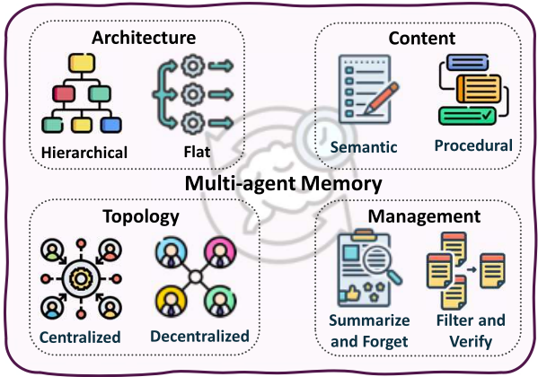
架构维度：层次化与异构化设计。近期研究指出，主流的多智能体记忆机制过于简化，且缺乏针对单个智能体的定制 [425]。为解决这一问题，G-Memory 构建了三层图层次结构（洞察图、查询图、交互图），将高层可泛化的洞察与细粒度的执行轨迹分离开来。这种层次化方法支持双向记忆遍历，从而能够跨回合检索抽象经验教训与具体先例。然而，Intrinsic Memory Agents 并未采用全局聚合，而是采取了一种相反的策略，即为每个智能体维护专门的角色对齐记忆模板 [442]。这种异构方法通过减少每个智能体的无关信息，在协作规划基准测试上保留了专门化的视角。近期工作进一步探索了混合策略，一些系统在去中心化架构中采用自适应的层次化知识图谱，使智能体能够对过去的交互进行推理，并仅共享相关信息而非原始经验 [443]。这些形成对比的方法揭示了一个根本性的权衡：层次化设计为全局一致性与跨回合学习而优化，而异构化设计则为角色保真度与计算效率而优化。
存储拓扑与记忆治理。系统采用不同的拓扑结构来平衡可扩展性、隐私性与一致性，每种拓扑都体现了关于信任与协调的不同假设。SEDM（Self-Evolving Distributed Memory，自演化分布式记忆）[426] 通过可验证的写入准入（借助可复现的重放）与基于效用的整合，将记忆转变为一个主动的、自我优化的组件，从而解决记忆管理问题。这种带有验证门控的集中式方法确保只有事实性或有用的信息进入存储库，并执行跨领域知识扩散，从而支持跨异构任务的迁移。相比之下，当隐私和组织边界至关重要时，Collaborative Memory [427] 使用二分图策略来区分私有与共享的记忆片段。每条条目都携带不可篡改的溯源信息（来源智能体、所访问的资源、时间戳），从而支持联邦系统中的合规审计与安全的跨智能体知识转移。在谱系的另一端，一些系统（如 Memory Sharing [444]）采用不受控的池化方式，所有智能体在共享记忆池中自由交换经验。研究表明，LLM 智能体之间的记忆共享能够形成更加多样化的集体记忆池，并通过催生涌现式集体智能提升了开放式任务上的性能。这三种拓扑代表了形式化与控制程度逐级递增的层次，反映了在管理知识多样性与验证严格性之间权衡时的不同优先取向。
40
记忆内容：语义、任务与认知阶段分解。不同的内容分解策略适用于不同的任务特性，而内容结构的选择从根本上决定了智能体与记忆交互的方式。MIRIX [328] 率先提出了语义分解（semantic decomposition），通过定义六种专门的记忆类型（Core、Episodic、Semantic、Procedural、Resource、Knowledge Vault）并由不同的智能体分别管理，在多模态问答（QA）任务上取得了 35% 的准确率提升，同时通过灵活路由减少了存储占用。基于这一模块化原则，LEGOMem [428] 则采用基于任务的分解（task-based decomposition），将执行轨迹拆分为可复用的记忆单元，并灵活地将其分配给中央规划者或专门的任务智能体。这一设计表明，编排者记忆（orchestrator memory）能够改进任务分解与委派，而智能体记忆（agent memory）则能增强子任务执行，从而有效缩小小型与大型 LLM 团队之间的性能差距。最近，MAPLE 引入了认知阶段分解（Cognitive-phase Decomposition）[445]，利用专门的智能体（Solver、Checker、Reflector、Archiver）实现系统化的错误检测与计划修复循环。Reflector 在每个回合（episode）结束后诊断错误，Archiver 则存储精炼后的计划以避免重复犯错，从而支持反馈驱动的学习。这三种内容分解策略表明，记忆设计应与任务结构相匹配：异构信息适用语义内容，工作流自动化适用基于任务的方式，而对错误敏感的推理则适用认知阶段方式。
记忆管理策略。有效的长期记忆需要主动管理，通过在简单性与复杂性之间进行权衡的多种方法，在相关性、效率与一致性之间取得平衡。Lyfe Agents [429] 率先提出了基于遗忘的方法，利用 Summarize-and-Forget（总结-遗忘）机制定期压缩记忆，仅保留关键上下文。该策略适用于存储严重受限的场景，但有丢失边缘情况下细微细节的风险。为了改进简单的遗忘机制，AGENT-KB [430] 引入了更为复杂的管理方式，将程序性轨迹组织为结构化的（实体、动作、观察）三元组，并学习可跨任务复用的模式抽象。各智能体协作对记忆片段进行检索、更新与推理，从而在无需显式再训练的情况下实现泛化，同时中央协调为可扩展的具身规划确保了长期一致性。在这些策略之间进行选择取决于系统的优先级：遗忘策略优先考虑存储效率，验证策略优先考虑可靠性，而基于学习的策略则优先考虑适应性。生产系统通常将多种策略相结合，例如对关键记忆采用验证、对低效用的外围信息采用遗忘，以平衡多重目标。
讨论。尽管已取得实质性进展，多智能体记忆系统在后训练（post-training）与模型适应方面仍基本处于未被探索的状态。当前方法主要聚焦于预训练模型的记忆组织与检索，而对于多个智能体如何通过强化学习或监督微调等后训练流程联合优化各自的记忆，相关研究却很少。这构成了一个显著的空白：尽管后训练技术已在单智能体记忆系统中得到积极探索，但如何将其扩展以使多智能体团队能够共同演化其记忆结构与管理策略，仍然是一个悬而未决的问题。
41
近期的进展已推动多智能体系统从固定的、人工设计的协调方式，转向能够使智能体随时间演化的训练范式 [26, 446, 414]。训练多智能体系统使其演化，是实现超越静态协调的自适应、长时程智能的关键一步。在这一新兴范式中，智能体通过交互、反馈和共享记忆实现集体改进，而不是孤立或被独立优化的行为。通过强化学习 [447]、自博弈 [448]、课程演化 [413] 以及验证器驱动的反馈 [449] 将推理嵌入学习回路，多智能体系统能够内化协调策略、解决智能体间的信用分配问题，并逐步细化分工。这一演化将多智能体推理从相互协作的大语言模型（LLM）的静态集合，转变为一种能够根据任务复杂度和环境变化调整自身结构、通信模式与策略的自改进组织 [450]。
基于交互与内在反馈的协同演化。越来越多的工作通过将交互、反馈与角色特化相耦合的显式训练目标，使多智能体演化得以具体实现。例如，Multi-Agent Evolve [446] 实例化了一个闭环协同演化框架，其中包含三种相互交互的角色（Proposer、Solver 和 Judge），它们全部源自同一个共享的 LLM 骨干网络，并通过强化学习进行联合优化。这构成了一个自我改进的课程，无需外部监督即可实现集体技能的增长。本着类似的精神，CoMAS [451] 强调内在的交互奖励，通过基于 LLM 的裁判直接从多智能体讨论动态中提取学习信号，从而实现纯粹由协作式交互驱动的去中心化协同演化。
面向集体适应的多智能体强化微调。另一些工作则聚焦于为基于 LLM 的多智能体系统量身定制的、具有原则性的强化微调框架。例如，MARFT [447] 对多智能体强化微调进行了形式化，重点指出了经典多智能体强化学习（MARL）假设与基于 LLM 的智能体组织之间的关键不匹配之处，例如角色异质性、动态协调和长时程对话，并提供了一个用于稳定集体后训练的系统性框架。Stronger-MAS [448] 进一步将在策略（on-policy）强化学习适配到多角色、多轮的设定中，其做法是引入按智能体和按轮次分组的策略来扩展 GRPO 风格的优化，从而在复杂的智能体工作流中实现更有效的协调学习。类似地，MAPoRL [413] 提出了多智能体后协同训练（multi-agent post-co-training），其中多个 LLM 通过一个协作感知的验证器进行联合优化，该验证器不仅奖励最终结果，也奖励中间讨论的质量，从而鼓励可迁移通信策略的涌现。
Role Specialization and Joint Credit Assignment. Other approaches have explored structured role specialization and joint credit assignment. MALT [452] trains sequential pipelines of heterogeneous agents using trajectory expansion and outcome-based reinforcement signals, allowing each agent to improve its specialized function while optimizing end-to-end collaborative performance. MARS [453] extends this idea to long-horizon research settings by jointly training complementary System 1 (fast, intuitive) and System 2 (deliberate, tool-using) agents via multi-agent reinforcement learning, enabling adaptive division of labor under complex tool interactions.
Preference- and Alignment-Driven Multi-Agent Evolution. Finally, another line of work has studied evolution under preference- and alignment-driven objectives. Preference-based multi-agent reinforcement Agentic Reasoning for Large Language Models learning [449] studies how collective policies and equilibria can be learned from preference-only feedback, addressing data coverage and stability challenges inherent in multi-agent settings. From a safety perspective, Alignment Waltz [454] frames alignment as a cooperative co-evolution process between a generation agent and a feedback agent, where evolving guidance enables the system to iteratively refine unsafe or unhelpful behaviors. Collectively, these methods demonstrate how embedding reinforcement learning, co-evolution, and verifier-driven feedback into multi-agent training enables LLM-based systems to evolve from static collaborations into adaptive, self-improving organizations.
42
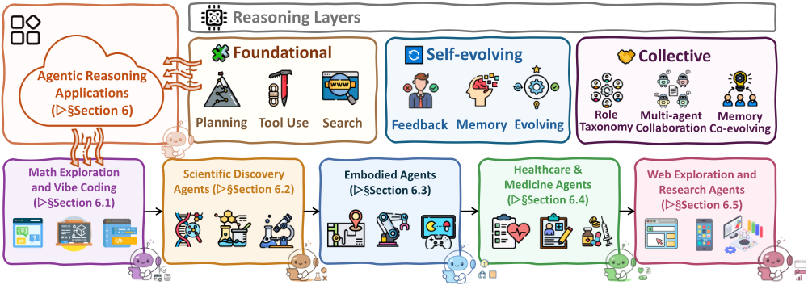
在前几节所确立的三层分类体系（即基础推理、自演化推理与集体推理）的基础上，我们现在考察这些能力如何在现实世界的应用中得以体现。如图 11 所示，本节综述了若干关键领域中具有代表性的推理赋能智能体系统，包括数学探索与氛围编程（vibe coding）（第 6.1 节）、科学发现（第 6.2
数学与代码历来是评估人工智能推理能力的两个应用最广泛的领域，因为二者都需要结构化的符号操作和精确的多步演绎。这些领域中传统的基准测试（benchmark）驱动评估正显现出明显的局限性。GSM8K [455]、MATH [456] 和 AIME [457] 等广泛使用的数学数据集正日益饱和，这使得区分现代高性能模型变得困难。这些数据集中的问题往往依赖于一小部分反复出现的解题技巧，并不需要评估更高级数学能力所需的持续且具探索性的推理。即使是 FrontierMath [458] 这类近期的评估也仍然侧重于最终答案的准确性，这只能部分地反映智能体的推理过程及其在问题求解过程中调整策略的能力。
然而，在智能体推理（agentic reasoning）范式下，这两个领域都正在经历从静态问题求解向动态过程的重大转变，后者强调探索、适应与协作。在数学领域，近期的系统 [70, 459, 29, 30] 表明，智能体能够进行竞赛级别的推理，这是建立在大语言模型（LLM）在编码任务上取得成功的基础之上的。基础数学领域的工作 [460, 461] 进一步表明，智能体能够搜索新问题、提出猜想、构造辅助引理，并探索数学概念中更深层的结构。这些进展使数学不再仅仅被视为一个评估基准测试，而是一个主动开展数学探索的领域。
大语言模型还通过被称为智能体编码（agentic coding）和氛围编程（vibe coding）[32, 462] 的新兴工作流重塑了编程领域。在这一范式下，模型扮演着交互式协作者的角色，参与多轮自然语言对话。用户迭代地设计和完善程序，而智能体则维护上下文、适应不断变化的需求，并持续进行自我纠正。Copilot 1 和 Cursor 2 等现代工具进一步推广了这种协作式工作流，使交互式编程成为现实世界软件开发中的常见实践。
在本节中，我们按照前文介绍的三层框架来组织讨论。基础层（第 6.1.1 节）关注核心的推理与执行技能：数学智能体在算术、代数、几何和微积分等领域执行符号操作与逐步推导，而代码智能体则进行语法感知的生成、实现函数，并通过解释器或编译器的反馈来验证正确性。自演化层（第 6.1.2 节）引入了反思与适应机制。数学智能体从中间推理轨迹中学习，以纠正错误步骤或探索替代的求解路径；代码智能体则基于运行时反馈或测试结果，对实现进行迭代式的调试、改进与优化。集体层（第 6.1.3 节）聚焦于协作，智能体在其中交换中间结果、共享可复用的模块，并共同开发复杂的证明或代码库。综合来看，这些层次揭示了数学与编程正在成为这样的领域：智能体推理（agentic reasoning）在其中赋能日益富有创造性与适应性的问题求解。
规划。显式规划被广泛认为是增强大语言模型（LLM）结构化推理能力的核心机制。在数学发现领域，若干系统展现出可被解读为规划形式的结构。在表示论与纽结理论中，Davies 等人的系统 [463] 通过提出中间对象和有前景的探索方向来引导人类数学家，这些中间对象和探索方向充当着组织问题求解工作流程的高层建议。在几何推理方面，Trinh 等人 [29] 通过将奥林匹克级别的几何问题分解为构造、引理生成与验证等先后阶段来求解这些问题，从而形成一个类似于规划推理轨迹的结构化多步骤过程。程序搜索方法 [30] 迭代式地改进候选程序与数学结构，这一过程自然形成了由粗到细的探索路径。大规模探索框架 [461, 460] 同样通过提出、测试和修改猜想或几何对象的循环来运行，这些循环共同构成了与规划相一致的过程性结构。面向更稳健数学推理的努力 [459] 同样依赖于逐步推理模式，进一步强化了隐式规划动态的存在，而这种隐式规划动态贯穿于各类数学智能体之中。
1 https://github.com/features/copilot
2 https://cursor.com
44
在代码智能体中，规划同样已成为组织多步推理并实现更结构化决策的关键组成部分。CodeChain [464] 和 CodeAct [99] 等早期系统引入了显式的规划或动作空间以支持模块化代码构建，而 KareCoder [465] 则将外部知识源或领域特定信息整合到规划过程中。后续工作探索了更加结构化的规划组织方式，包括多阶段控制流 [466, 467]、树状规划结构 [468, 22] 以及自适应细化机制 [469]。规划还与探索广度的提升相关联：GIF-MCTS [470] 引入蒙特卡洛树搜索（Monte Carlo Tree Search）来探索多条代码生成轨迹。近期的扩展工作证明了规划在硬件设计等专业领域中的适用性，例如 VerilogCoder [471] 采用了图结构化规划与基于波形的验证。为了应对难以进行状态序列化的环境，Guided Search [472] 引入了前瞻（lookahead）与轨迹选择策略，从而在无需完整访问环境的情况下评估候选动作。
工具调用（Tool-Use）。将外部计算工具与大语言模型（LLM）相集成，已成为扩展单智能体系统推理与生成能力的一项核心机制。许多数学推理系统的一个显著特征在于其与外部计算工具的集成。诸如 Thakur 等人 [473] 之类的形式化定理证明智能体直接在 Lean 证明助手内运行，通过上下文引导（in-context guidance）选择策略（tactics）并与底层证明器交互。关于形式化数学推理的立场论文 [474] 强调，数学人工智能的进展将依赖于能够在更广泛的推理循环中调用定理证明器、可满足性求解器和计算机代数系统的系统。面向发现的程序搜索框架 [30] 依赖于执行所生成的程序，并采用符号例程进行验证。生成式建模方法 [475] 利用计算数论工具来检查并过滤所生成的候选对象。聚焦几何的系统 [29, 476] 集成自动化几何求解器与检查器，以验证构造及推导出的关系。在上述系统中，外部计算资源在实现正确且可扩展的数学推理方面发挥着核心作用。
在代码智能体中，外部工具同样已成为将基于 LLM 的智能体的能力扩展到纯文本生成之外的关键所在。诸如 Toolformer [6] 和 ToolCoder [477] 等早期工作探索了模型如何学会在生成过程中调用 API 或搜索工具以获取缺失的信息。后续系统集成了日益丰富的工具链：ToolGen [478] 利用自动补全工具来解决未定义的依赖项，而 CodeAgent [479] 则整合了多种编程实用工具，包括搜索、文档阅读、符号导航和代码执行，以支持更贴近实际的软件工作流程。若干方法专注于改进工具反馈循环，例如 ROCODE [480] 将实时错误检测与自适应回溯相结合，CodeTool [481] 则引入过程级监督以提高工具调用的可靠性。总体而言，这些系统表明，工具集成通过搜索结果、文档、静态分析或执行反馈提供了必不可少的外部信号，从而扩展了单智能体 LLM 的推理与生成能力。
45
搜索与检索。搜索与检索已成为一种互补机制，通过外部信息源来丰富模型上下文。搜索是数学发现中反复出现的一种机制。基于程序搜索的系统 [30] 将数学发现视为对一个程序空间的导航，其中候选程序编码猜想或结构性假设，并依据符号或数值检验进行迭代式过滤。生成建模方法 [475] 通过从能够捕捉结构规律的灵活分布中采样，来探索数学对象族。诸如 Trinh 等人 [29] 与 Swirszcz 等人 [460] 的几何系统在构造、构型和高维多面体上进行搜索，并受学习到的启发式方法或结构约束的引导。大规模发现框架 [461] 通过在猜想上反复执行“提出-测试-改进”循环来运作，支持对数学图景的广泛探索。所有这些系统都依赖于系统化的搜索过程，为数学思想的探索提供结构。
在代码生成方面，诸如 RepoHyper [482] 等仓库级检索系统从大规模代码库中定位可复用的代码片段，为生成提供信息更丰富的上下文。CodeNav [79] 在生成过程中对真实仓库进行动态索引，检索相关函数并依据执行反馈进行调整。AUTOPATCH [483] 将检索应用于性能优化，将历史代码示例与控制流图分析相结合，以实现上下文感知的改进。结构感知检索也得到了探索：基于知识图谱的仓库表示 [484] 通过捕捉符号与关系结构来提升检索质量，而 cAST [485] 引入了基于抽象语法树（AST）的分块方法，以增强句法连贯性与检索粒度。这些检索方法展示了外部知识源如何通过提供高质量、结构化的上下文来增强单智能体大语言模型（LLM），此类上下文能够同时指导理解与生成。
智能体反馈与反思。在数学与代码推理任务中，反馈作为一种外部信号发挥作用，用于凸显不一致之处、确认正确的推断，并引导智能体进行更可靠的后续计算。反馈机制在各类数学发现系统中表现突出。在基于程序搜索的发现中 [30]，执行候选程序并根据约束评估其输出，可以产生反例或确认结果，从而实现对猜想的迭代改进。在几何领域，自动化检查器验证构造与推导出的关系 [29, 476]，提供引导后续修正的正确性信号。交互式评估框架 [486] 表明，人类的澄清说明与后续提示能够暴露推理错误并改善模型响应。关于形式化推理的立场性工作 [474] 强调，验证、证明检查与模型检查是结构化反馈的重要来源。在若干涉及多个候选假设的系统中 [30, 475, 461]，利用验证信号来保留有前景的候选假设，其作用类似于基于适应度的评估步骤，因为这些信号决定了哪些假设得以存留、哪些被淘汰，从而在不引入显式学习信号的情况下塑造后续探索的方向。
对于代码智能体而言，反馈与反思是提升多步推理可靠性的核心。诸如 Self-Edit [487] 等故障感知的编辑方法引入基于执行的信号来修正错误代码，而 Self-Repair [488] 则整合代码模型与反馈模型来诊断测试失败并提出针对性的修正。像 LeDeX [489] 这样更加结构化的系统将逐步标注、执行驱动的验证与自动化修复结合成一个闭环流水线，其中反馈持续地为下一次修订提供依据。反思还作为一种记忆形式发挥作用：诸如 Self-Refine [270]、Self-Iteration [490] 和 Self-Debug [491] 等迭代式自我改进框架复用先前的草稿、分析与解释来指导后续修订，而诸如 CodeChain [464] 和 LeDeX [489] 等工件级机制则将可复用组件、修正后的代码片段以及执行轨迹保留为持久化表示。总体而言，这些方法展示了反馈——无论是符号化的、基于执行的，还是自我生成的——如何与迭代记忆相互作用，以支持面向代码的智能体系统中的结构化精炼与长程改进。
46
记忆。记忆为智能体提供了一种保留并利用早期推理步骤信息的机制，使其能够保持一致性、改进中间状态，并在更长的问题求解跨度上提升自身性能。尽管很少有系统引入显式的记忆模块，但许多数学智能体依赖于可被视为隐式记忆的持久状态形式。交互式评估框架 [486] 在多轮交互中维护对话与问题状态上下文，使模型能够在先前的部分推导基础上继续构建。形式化定理证明智能体 [473] 在 Lean 中持续演化的证明状态上进行操作，这些状态累积策略（tactics）、子目标和中间引理，充当结构化的持久信息。程序搜索与发现系统 [30, 461] 在其迭代精化过程中保留猜想历史、反例和成功构造。它们在跨推理步骤保留和复用信息方面所发挥的作用，与智能体系统中更广义的记忆概念相契合。
在代码智能体中，记忆越来越多地以显式结构的形式出现，用于在长程生成过程中保持连贯性。若干系统构建了共享或结构化的工作区：Self-Collaboration [492] 引入了一种黑板记忆，用于存储任务描述、中间草稿和修订记录，使智能体能够通过共同的表示进行协调。诸如 L2MAC [493] 和 Cogito [494] 等架构方法进一步扩展了这一思想，将上下文组织到专用寄存器、分层记忆单元或长期知识库中，从而克服上下文窗口的限制，并支持多文件或大函数推理。在这些设计中，其背后的洞见是一致的：有效的代码智能体需要持久、结构化且通常具备领域感知能力的记忆，以保留中间推理过程，并在长期开发轨迹中实现自我改进。
为了应对数学发现与代码生成任务日益增长的复杂性，近期的系统越来越多地依赖于多智能体（multi-agent）或模块化设计，将问题分解为相互协作的专门化组件。数学发现框架通常将推理组织为明确定义的多智能体或多组件工作流，这些工作流相互协作以探索和验证数学思想。polytopegeneration 系统 [460] 使用多个专门化组件来生成、评估和改进几何对象，构成了一个真正意义上的协作工作流。大规模探索框架 [461] 通常将发现过程划分为提出猜想、识别反例和改进命题等模块，这些模块虽然在统一系统内实现，却体现了多智能体的角色专门化。关于 AI 辅助数学研究的早期工作 [463] 以及奥赛级系统 [476] 也涉及人类与 AI 的协作，其中人类数学家以互补的方式与 AI 系统交互。这些进展表明，数学发现本质上是一个协作过程，而多智能体架构为在智能体系统中表达这种协作提供了天然的载体。
面向代码生成的多智能体系统已经从简单的基于角色的流水线，发展为能够处理长时程软件开发的自适应协作框架。诸如 Self-Collaboration [492] 和 AgentCoder [495] 等早期方法将任务分解为顺序执行的角色，而 PairCoder [496] 和 FlowGen [497] 等分层设计则引入了一种架构，其中高层智能体负责规划，低层智能体执行具体实现。诸如 SoA [498] 等灵活系统则根据任务复杂度进一步调整智能体的数量和专门化程度。其他框架，包括 MapCoder [499]、AutoSafeCoder [500] 和 QualityFlow [501]，则依赖于多个智能体反复循环地生成、测试、分析和修复代码。近期的工作探索了自演化的系统结构，例如 SEW [502] 基于运行时反馈重组协作路径，以及 EvoMAC [351] 通过迭代式的基于文本的更新机制调整智能体策略。诸如 Lingma SWE-GPT [503]、CodeCoR [504]、SyncMind [505] 和 CANDOR [506] 等协作优化方法则明确地改进了跨智能体的协调。总体而言，这些系统展现出一种明确的转变趋势：多智能体代码生成器不仅依赖于角色分解，还依赖于反思、分布式评估、自适应重构和团队级优化，从而使代码生成转变为一个日益协调且更具韧性的问题求解过程。
47
科学发现智能体旨在通过将大语言模型（LLM）与领域专用模拟器、实验室自动化以及最新文献相结合，加速从假设生成到实验执行的科学研究全生命周期。这些系统在处理异构数据、安全约束与长程目标的同时，将决策建立在可验证的流程之上。
在本小节中，我们首先介绍基础层（第 6.2.1 节），其涵盖科学情境下的规划、与科学资源的工具增强型交互、包括基于检索增强生成（RAG）的系统在内的搜索与检索机制，以及执行阶段与实验室硬件的集成。在这些能力的基础上，自进化层（第 6.2.2 节）引入了智能体记忆、反馈与反思机制，使科学智能体能够改进假设、调整实验方案并从实验结果中学习。最后，集体层（第 6.2.3 节）探讨多智能体协作，其中各智能体协调角色分工、共享中间知识，并围绕复杂的科学目标共同推理。
规划。科学智能体利用推理增强的规划能力，将研究目标分解为若干步骤，决定下一步调用哪个工具或模拟器，并随着证据的到来不断修订计划。简而言之，思维链（chain-of-thought, CoT）源于大语言模型（LLM）的推理，这种推理将指令编译为严谨的可执行计划 [1]。例如，ProtAgents [507] 实现了一个规划器智能体，该智能体利用 LLM 的推理能力为蛋白质分析制定具体计划，并根据另一个批评者智能体的反馈持续修改该计划；Eunomia [508] 则采用 ReAct 风格 [5] 的工作流进行上下文推理（in-context reasoning）：在检索得到 topk 证据集合后，骨干 LLM 会引用一句作为依据的句子，而这一引用决定了下一步动作的选择。其他例子还包括 MatExpert [35]，它部署思维链 LLM 来撰写分步的转变路径，然后通过反馈循环输出结构化的晶体候选。
规划还可以充当推理的约束。例如，Curie [509] 利用一个严谨性引擎（rigor engine），在 Architect LLM 提出的规划步骤内执行对齐、设置和可复现性检查。因此，除非满足这些严谨性门控（rigor gates），否则 Architect 的自由形式推理无法向前推进，这使得规划既成为推理过程的引导者，也成为其调节者。此外，通用生物医学智能体 Biomni [40] 将其推理约束在一个动态构建的生物医学动作空间内，该空间涵盖全面的工具、软件包和数据库，并要求将每个假设操作化为可执行代码。
48
工具调用。如今，工具调用已成为科学智能体推理循环的重要组成部分。具体而言，这些智能体不再遵循僵化的规则，而是能够自行决定调用哪个工具、何时调用、如何填写参数，并基于证据进行验证或修订。例如，SciAgent [510] 将工具增强推理形式化为一个四步流程：规划、检索、基于工具的动作和执行。智能体经过训练，能够决定何时调用工具、调用哪个工具，以及如何将其整合到科学任务的求解过程中。借助领域专用工具，ChemCrow [33] 将各种专家化学工具串联起来，使中间计算成为下一步推理的前提，从而实现端到端的规划与自主合成。CACTUS [511] 同样将解释锚定在化学信息学（cheminformatics）输出之上，从而减少对语言模型单纯自由形式推理的依赖。
其他值得注意的例子包括 ChemToolAgent [512] 和 CheMatAgent [513]。其中，ChemToolAgent [512] 采用类 ReAct [5] 的架构并配备多个专用化学工具，允许 LLM 选择工具调用并对其进行参数化；而 CheMatAgent [513] 则更进一步，通过学习来掌握工具调用：它集成了 100 多个化学/材料学工具，构建了一个工具专用的基准测试（benchmark），并使用蒙特卡洛树搜索（Monte Carlo Tree Search）结合步骤级微调，同时学习应当选择哪个工具以及如何填写参数。
在生物医学智能体方面，TxAgent [514] 在 211 个经过审核的工具上对治疗推理进行扩展，并执行多步推理，以协调药品标签、药物相互作用与患者情境，从而将临床论证转化为可执行的轨迹。另一方面，AgentMD [515] 构建了两阶段的工具记忆：它首先从文献中挖掘出数千个临床计算器（即“制造工具”），随后在推理时选择并应用合适的工具（即“使用工具”），从而将预测锚定于具体计算之上。其他近期系统 [516, 517, 518, 519, 520, 521] 强化了类似的设计：将工具调用与推理协同设计，使每一项论断都可计算、可审计。
工具调用的另一类重要能力是智能体执行（agentic execution），其涵盖范围包括但不限于运行代码与模拟环境。执行层将高层规划与物理基础设施衔接起来，使科学智能体能够自主操作实验室硬件、编排仿真流水线并管理大规模数据工作流。近期工作如 Organa [522] 将 LLM 推理同任务与运动规划（task-and-motion planning）、调度和感知相结合，利用自主机器人执行多步实验；AtomAgents [523] 则是执行在仿真侧的典型代表：这是一个具备物理感知能力的系统，可规划并运行原子尺度工作流，协调用于代码执行、分析与假设检验的工具；Chemist-x [524] 则展示了超越纯数字场景的湿实验（wet-lab）执行，其中智能体生成控制脚本并驱动自动化平台，在无需人工干预的情况下验证实验条件。
另有若干平台将执行与优化或基于团队的自主性相结合。例如，SGA [525] 将“LLM 作为提议者、模拟器作为优化器”的工作流加以形式化；MatExpert [35] 针对材料发现任务运行检索、转换与生成的工作流；CellAgent [526] 则协调规划者、执行者与评估者等角色，以运行完整的单细胞分析流水线。
搜索与检索。超越简单的上下文堆砌，近期的科学智能体系统将检索提升为一个审慎的推理步骤：智能体决定何时获取、获取什么，以及如何在最终确定假设之前使用证据。凭借检索能力，BioDiscoveryAgent [527] 在闭环内拉取文献与阶段性实验测定结果，使模型下一步的基因扰动选择以已阅读和测量的内容为条件；而 DrugAgent [528] 则协调知识图谱查询、通过 web API 进行的定向文献搜索以及机器学习预测器。其规划器选择检索动作，随后将异质证据调和为可解释的推理依据。为促进科学研究，ARIA [529] 将“搜索—过滤—综合”的工作流落实为与角色绑定的步骤，并使引用得以向前传递，从而将文献转化为可操作的流程。类似地，AI Scientist-v2 [530] 采用一种智能体树搜索框架，其中智能体在假设形成与论文撰写期间主动查询科学文献数据库，确保分析与写作立足于现有证据。在研究想法生成方面，另一项近期工作 [531] 利用精心整理的背景资料包对该过程加以约束，将检索用作一种实验控制。
49
在这些进展的基础上，检索增强生成（RAG）框架将外部来源不仅定位为辅助性参考文献，更将其定位为推理过程中的主动组成部分。具体而言，RAG 增强的科学智能体将外部来源作为大语言模型（LLM）上下文和推理材料的主要输入，且大多伴随显式的规划、段落抽取、引用与矛盾检查。例如，PaperQA [516] 和 PaperQA2 [517] 将检索视为主循环。通过决定阅读哪些文档、为每条论断标注出处，并检测冲突以引导综合，这些工作能够产出本质上可验证的专家级文献综述。在材料科学领域，LLaMP [518] 将 RAG 的应用扩展到文本之外。具体而言，它利用分层 ReAct [5] 智能体调用材料专用 API 以获取带隙或弹性张量、编辑结构，进而基于计算得到的属性进行推理。
科学发现智能体能够超越静态推理，获得自我进化的能力，即从经验中学习、精炼其内部表示，并在连续的交互中提升决策质量。这一自我进化层为智能体配备了多种机制，用于监控并修正自身推理、保留并复用中间假设，以及根据外部反馈或环境信号调整未来计划。在接下来的段落中，我们将讨论记忆模块如何实现科学知识的积累，以及反馈与反思机制如何在长时程科学工作流中支持持续适应与推理一致性。
记忆。ChemAgent [532] 实现了一个自更新库。它将化学问题分解为子任务，并编写可复用的技能（例如：流程、模式、解决方案），后续提示可以检索并适配这些技能，从而稳定长程多步推理，而无需从头重新推导所有内容。另一方面，MatAgent [533] 强调面向无机材料的可解释生成，其中短期记忆回顾近期的组分与反馈，长期记忆保存成功的设计及其推理轨迹，两者在各次迭代中被复用，以指导提案细化并实现透明审计。
智能体反馈与反思。首先，Scientific Generative Agent [525] 将离散的 LLM 提案与优化连续参数的内环仿真相绑定，仅当证据改善时才向前推进。其反思能力由可度量的损失降低所驱动。接着，ChemReasoner [534] 在 LLM 的想法空间上执行启发式搜索，但利用量子化学反馈对候选进行评分与引导，将电子结构信号转化为对语言假设的有原则的批判。作为对这些基于物理的信号的补充，Curie [509] 通过智能体内检查、智能体间门控以及实验-知识模块，将严谨性检查直接嵌入控制流。与此同时，LLMatDesign [535] 在材料工作流中构建了显式的自我反思，促使智能体在不一致性传播到工具调用之前将其暴露并修复。此外，NovelSeek [536] 将反思用作闭环，在每轮之后利用人机交互反馈更新代码与计划。最后，一项近期研究 [537] 事先以明确的目标与约束、事后以标准化评分来规范该过程，从而提供一个客观标准，使反思可重复。
50
面向科学发现的多智能体框架将劳动分工分配到专门化的 LLM 驱动角色上，其中先进的 LLM 推理不仅统筹科学智能体之间的协调，还对相互冲突的证据进行裁决，以维持整个过程的连贯性。
为加以说明，我们在此介绍一些重要的多智能体框架。首先，ProtAgents [507] 在蛋白质设计中体现了这一模式。该框架包含负责文献检索、结构分析、物理模拟和结果分析的智能体。具体而言，骨干 LLM 引导对多模态输出的推理，根据反馈信号决定何时迭代或进行收敛检查。另一方面，PiFlow [538] 将推理实例化为原理感知的不确定性削减，其多智能体循环中由 Planner 智能体向 Hypothesis 智能体和验证循环传递策略，明确地将多智能体通信与假设-证据对齐绑定在一起。AtomAgents [523] 也在合金发现中引入了类似的角色专门化。特别地，该智能体利用 LLM 引导的推理来控制何时触发模拟以及如何评估多模态结果，让推理来分配计算资源并剪枝合金候选。
借助类似的规划器-执行器-评估器框架，CellAgent [526] 将单细胞分析方面的研究实例化，其中规划器 LLM 推理负责选择工具或超参数，而评估器 LLM 在质量检查未通过时触发自迭代重跑。其他一些值得注意的工作包括：引入四智能体框架（scout、filter、synthesizer 和 procedure-drafter）的 ARIA [529]、将严谨性嵌入多智能体规划的 Curie [509]、用于基因表达发现的 Team of AI-made Scientists (TAIS) [539]，以及利用角色智能体进行纳米抗体设计的 Virtual Lab [540]。
具身智能体（embodied agents）将推理扩展至文本之外，把语言锚定于机器人的感知、操作与导航之中。通过将 LLM 嵌入机器人实体与仿真身体之中，这些具身智能体得以应对真实世界泛化、持续适应与多模态接地等挑战。
在本小节中，我们首先介绍基础层（第 6.3.1 节），其涵盖长时程具身规划以及工具辅助的感知、操作与执行。在这些能力的基础上，自演化层（第 6.3.2 节）引入了智能体记忆、反馈与自我反思能力，使机器人能够改进控制策略、适应新环境，并通过持续交互提升性能。最后，集体推理层探讨多机器人协作（第 6.3.3 节），其中各智能体协调感知、共享所学表征，并对任务进行联合推理，以实现复杂的具身目标。
规划。SayCan [136] 等早期工作通过将语言描述映射到技能可供性估计而确立了这一模板，SayPlan [541] 则利用 3D 场景图将目标指称与以物体为中心的表征及空间模型对齐，从而改进了这一接地方式。超越符号表征，EmbodiedGPT [542] 利用精心整理的子目标视频思维链（CoT）标注来训练模型，将多模态输入映射为用于具身规划的结构化序列；而上下文感知规划系统 [543] 则在规划流水线中加入语义空间地图与物体位置信息，从而支持执行过程中的动态规划。此外，DEPS [544] 为开放世界多任务智能体引入了一种交互式规划循环（即描述、解释、规划与选择）。
51
具身智能体还依赖于能够显式对齐感知与动作的多模态推理轨迹。例如，Embodied CoT [545] 训练视觉-语言-动作模型在执行动作之前生成融合视觉特征的推理步骤。Fast ECoT [546] 通过跨时间步缓存并复用推理片段来加速这一过程，在保持任务成功的同时降低了推理延迟。最近，CosmosReason1 [547] 建立了关于空间、时间与动力学的本体，使 CoT 序列能够编码结构化的物理先验。CoT-VLA [548] 通过在动作生成之前预测未来图像帧作为中间子目标，构建了视觉思维链。最后，Emma-X [549] 将接地思维链与前瞻空间推理相结合，提升了长时程具身任务的性能。
另一类工作则通过强化学习（RL）来增强具身规划，将规划不仅视为静态分解，而且视为能够适应环境反馈的自演化过程。RobotR1 [550] 训练大型视觉-语言模型（VLM）在视觉上下文中预测关键点转移，将 RL 变为学习物理接地前向模型的机制。ManipLVM-R1 [551] 利用可验证的物理奖励信号（如轨迹匹配与可供性正确性）来减少对密集专家标注的依赖。Embodied-R [38] 提出了一种协作框架，其中 VLM 负责感知、较小的语言模型（LM）负责推理，整体通过 RL 训练以完成具身空间推理。VIKI-R [552] 通过两阶段设计将这一方向进一步扩展至异构多智能体协作，采用先进行思维链微调、随后在协调激活与规划的各智能体之间开展分层 RL 的两阶段流水线。
工具调用（Tool-use）。具身智能体还可以被强化以与外部工具交互，从而增强感知并弥补不完整的观测。例如，GSCE [553] 提供了一种提示框架，将技能 API 与约束绑定在一起，以实现安全的 LLM 驱动无人机控制。MineDojo [554] 将智能体与互联网规模的语料库相连接，从而实现更丰富的可供性（affordance）接地。Physical AI Agents [34] 进一步提出了一种模块化架构以及检索增强生成（RAG）设计模式，用于将真实世界的物理交互嵌入到 LLM 驱动的智能体中。除了离线工具调用之外，一些系统将环境本身视为一个 API。例如，Matcha agent [450] 利用 LLM 针对物体和场景发出查询，从而获取完成任务所需的感知信息。
另一方面，执行模块是最重要的工具类型之一。它将高层语言指令转换为连续的电机指令，使具身智能体能够在物理环境中可靠地行动。SayCan [136] 等早期系统利用语言来调用机器人的抓取与放置（pick-and-place）技能；LEO [555] 将执行拓展到更通用的操作场景，而 Hi Robot [556] 使用视觉语言模型（VLM）推理器来处理复杂提示，并由低层动作策略执行所选步骤。较新的工作则进一步拓宽了执行空间：Gemini Robotics [557] 引入了面向真实世界机器人控制的大规模视觉-语言-动作（vision-language-action）模型，而 Octopus [558] 在仿真环境中生成可执行代码，从而在规划与操作之间架起桥梁。
在单智能体控制之外，混合流水线将反应式反射与语言引导的策略相耦合，以支持复杂领域。例如，CaPo [559] 引入了一个执行阶段，智能体在其中执行被分解的子任务，并根据进展调整其元计划（meta-plan）；COHERENT [560] 在其 PEFA（即提议、执行、反馈与调整）循环中嵌入了一个机器人执行器模块，从而确保每个被分配的子任务都得到恰当的执行与细化；MP5 [561] 则集成了多模态感知，以在开放式的 Minecraft 中生成可执行计划。在感知-动作接口方面，LLM-Planner [83] 生成子目标，并通过低层控制器将其映射为动作序列；EmbodiedGPT [542] 则展示了如何将 LLM 生成的计划转化为控制策略，以实现物理环境中的具身控制。
52
搜索与检索。具身智能体还可以利用搜索与检索能力，将语言锚定于空间结构与过往经验之中。诸如 L3MVN [562] 等早期导航系统利用大语言模型（LLM）查询语义地图，并在视觉目标导航过程中选择有前景的前沿区域作为长期目标；而 SayNav [563] 与 SayPlan [541] 则构建 3D 场景图，进而搜索与任务相关的子图，使语言指令能够被转化为大型环境中已锚定的路径点与子任务。像 ReMEmbR [564] 这样的长时程导航工作则维护一种结构化的时空记忆，可对其进行查询以回答有关机器人过往经验的“在哪里”与“何时”问题。此外，检索增强生成（RAG）风格的系统将检索作为规划循环中的一等组成部分：Embodied-RAG [565] 与 EmbodiedRAG [37] 将智能体的经验和 3D 场景图视为非参数化记忆，从中检索与任务相关的情节片段或子图，用于导航与任务规划；Retrieval-Augmented Embodied Agents [566] 从共享记忆库中检索策略，并以其为条件进行动作生成；而 MLLM-as-Retriever [567] 则训练一个多模态 LLM 检索器来对过往轨迹进行排序，使每个决策步骤都能以最有用的先前经验而非仅以当前观测为条件。
当具身智能体能够随时间自我演化时，便能可靠地实现长时程自主性：监测自身内部状态、存储并更新与任务相关的知识，并在计划偏离时调整行为。在接下来的段落中，我们将考察记忆模块、反馈信号与智能体反思如何使具身智能体把规划从一次性过程转变为持续改进的行为循环。
记忆。有效的记忆机制使智能体能够复用过往经验，并在长时间交互中保持连贯的任务执行。许多系统将近期观测缓存于情节缓冲区中，同时在结构化图中总结长期语义，例如家庭任务规划 [568] 以及采用混合多模态记忆的长时程智能体 [307]。技能与例程可通过索引式记忆存储在任务之间共享。例如，HELPER-X [569] 对已发现的技能和动作脚本建立索引，这些内容可辅助后续对话并跨领域共享。BrainNav [570] 等空间导航方法维护受生物学启发的双地图记忆，并通过海马体枢纽相互连接，以减少幻觉和漂移。更广泛的情境同样从中受益：CAPEAM [543] 引入了能够跟踪物体状态与空间变化的环境感知记忆模块。最后，Ella [571] 等终身情节式系统维护长期多模态记忆系统，以支持社交机器人交互。
智能体反馈与反思。基于对话的批评、经校准的不确定性与环境感知的奖励塑形，能够在二元成功信号之外进一步改进策略。例如，Matcha 智能体 [450] 在行动之前将物体和场景视为可交互的信息源；FAMER [572] 则利用轻量级偏好反馈，使具身智能体实时适应用户意图。诸如 KnowNo [573] 等不确定性感知规划器会在置信度低于保证水平时主动寻求指导；Octopus [558] 则利用环境反馈随时间改进所生成的可执行程序。在多智能体层面，MindForge [390] 引入了心智理论式的视角反馈，使异构机器人能够适应彼此的推理策略；而 ReAd [574] 则引入了一种基于优势的反馈回路，使 LLM 规划器能够在具身多智能体任务中自我改进其协作策略。
稳健的反思机制通过监控智能体自身的推理与动作、进而调整计划，帮助智能体预见失败。Optimus-1 [307] 将知识引导规划器（Knowledge-guided Planner）与经验驱动反思器（Experience-Driven Reflector）相结合，利用存储的经验来修订决策；而另一项近期研究 [575] 则定义了结构化的智能体工作流（包括自我反思 self-Reflection、多智能体反思 multi-Agent reflection 与 LLM 集成 LLM Ensemble），使机器人能够对 LLM 生成的以对象为中心的计划进行反思和改进，从而减少推理错误。诸如 EMAC+ [576] 之类的系统将感知、规划与验证步骤交错执行，以实现在线计划细化；而诸如 Voyager [36] 等更早期的工作也嵌入了迭代式提示循环，利用环境反馈和执行错误来随时间不断完善其技能库。
53
多智能体协作使具身系统能够更高效地分工并协调复杂任务，而语言通常作为协商与角色分配的主要媒介。例如，SMART-LLM [577] 将高层指令分解并在多个机器人之间分配子任务，而 CaPo [559] 则优化协作计划以避免冗余探索。在异构性与协调机制方面，COHERENT [560] 在不同类型的机器人之间部署了“提议-执行-反馈-调整”（propose-execution-feedback-adjust）循环，以实现无缝的联合操作。此外，心智理论（Theory of Mind, ToM）——即具身智能体推断和推理他人信念与心理状态的能力——也与具身多智能体系统高度相关 [388, 391, 389]。例如，MindForge [390] 为智能体配备显式的心智理论表示和自然的智能体间通信，以实现协作式协调。
在多模态框架方面，EMAC+ [576] 集成视觉与语言模块并通过视觉反馈持续细化计划，COMBO [578] 集成视觉与语言模块并通过视觉反馈持续细化计划，而 VIKI-R [552] 则证明了强化学习可作为具身智能体之间可扩展的协调机制。在更大规模上，诸如 RoCo [579] 之类的研究展示了角色协商与灵活协议如何在动态环境中支持适应性强的团队协作。
医疗健康智能体旨在支持完整的临床决策流程，从最初的症状分诊到治疗规划，并将大语言模型（LLM）与结构化患者病历、医学本体和专家指南相集成。与通用助手不同，这些系统必须在严格的安全约束、多模态证据和法律依据之下运行。
在本小节中，我们首先介绍基础层（第 6.4.1 节），其中包括医学与诊断推理，以及通过工具增强的方式访问各类生物医学知识库和 API。在这些原语的基础上，自进化层（第 6.4.2 节）考察记忆、反馈与反思模块，这些模块使智能体能够积累患者特定的上下文、适应纵向病程轨迹，并随时间推移修订临床方案。最后，集体层（第 6.4.3 节）重点介绍多智能体协作，包括医生-智能体协同规划、人机共享自主性以及专科模型集成。
规划。规划是医疗智能体的一项核心能力，使其能够将长程临床路径结构化为诊断与治疗阶段，随患者病情演变动态细化工作流，并跨团队与工具进行协调，以实现连贯的医疗服务。我们如下讨论若干近期进展。例如，一个近期的智能体化临床系统 [580] 编排专用工具与指南引用以支持肿瘤学决策；EHRAgent [581] 将多表电子健康记录（EHR）推理分解为带反馈学习的代码执行步骤；PathFinder [365] 则提出了一种面向诊断推理的多智能体、多模态组织病理学工作流。
另一些框架将规划建模为跨越多个抽象层级的显式编排层。例如，MedAgent-Pro [368] 提出了一种分层工作流，其首先依据指南准则生成疾病级诊断计划，随后调度工具智能体模块予以执行。MedOrch [582] 将工具调用本身视为跨模态的规划原语，编排推理智能体以执行多步诊断。另一方面，ClinicalAgent [583] 为临床规划协调多智能体工作流，利用 LLM 推理来分配工具并综合证据。此外，医疗智能体中的规划正日益具备自适应性，能够响应新信息与不断演化的情境。例如，DoctorAgent-RL [584] 将临床问诊建模为不确定性下的动态决策过程，通过强化学习优化提问策略与诊断路径；而 DynamiCare [585] 则随着新患者信息的出现，在多轮交互中调整专科智能体团队。
54
工具调用。工具集成显著扩展了医疗智能体的动作空间，使其能够执行精确计算、解读医学图像并访问专业数据库。近期研究总结如下。若干系统明确强调可扩展性。MedOrch [582] 引入了一种模块化架构，允许在不重新训练的情况下纳入新的诊断 API；TxAgent [514] 则集成了两百多个药理学工具，以支持跨越药物-疾病-治疗关系的治疗决策。AgentMD [515] 同样整理并利用了两千多个可执行的临床计算器来学习风险预测流水线。
另一些方法则聚焦于结构化函数调用以实现安全执行。例如，基于 LLM 的智能体在获得显式函数签名的情况下，能够可靠地调用床旁计算器，从而确保剂量计算与风险评分中的算术正确性 [586]。MeNTi [587] 更进一步，支持跨多步医学计算器的嵌套工具调用。作为对这些基于文本集成的补充，MMedAgent [39] 证明了智能体能够学会在多模态工具中进行选择。
自进化能力使医疗智能体能够维持纵向临床一致性。代表性用例包括跨多次就诊积累相关医学上下文、随着新证据到来更新信念，以及在不一致浮现时修订决策。在以下段落中，我们考察记忆、反馈与反思机制如何共同将临床推理从一次性预测转变为持续改进的诊疗过程。
记忆。持久化记忆对于追踪病史或患者历史以及在多次交互之间维持上下文至关重要。例如，流行病建模智能体 [598] 维护时序接触史以随时间推移追踪感染链；而 MedAgentSim [595] 存储经验历史并随时间改进诊断策略。在结构化数据场景中，EHRAgent [581] 记录对表格化电子健康档案（EHR）的中间计算结果，使后续步骤能够引用先前结果。EvoPatient [599] 将记忆与协同进化交织，在对话各阶段维持不断演化的临床状态，而 AIPatient [594] 则持久化由 EHR 导出的纵向变量以驱动一致的响应。诸如 MedOrch [582] 之类的多智能体系统包含临床知识图谱智能体，其可被视为可查询的外部记忆，用于检索已知的关系或诊断模式。
智能体反馈与反思。智能体反馈与自我反思是提升医疗智能体可靠性与适应性的互补机制。反馈将执行结果转化为学习信号：DynamiCare [585] 在新观测到的患者状态与先前计划相矛盾时更新多智能体治疗策略；DoctorAgent-RL [584] 基于问诊奖励优化提问策略；MedAgentGym [593] 通过执行并评分所生成的代码来确保正确性。工具调用流水线同样会传播执行反馈。例如，EHRAgent [581] 中表格查询的成功/失败，或 MeNTi [587] 与临床计算智能体 [586] 中计算器调用的成功/失败，都会被用于改进后续动作。
多智能体协作是医疗AI的核心，因为临床决策往往依赖于专科医生之间的共识、对相互竞争假设的协商，以及医生、患者和试验设计者等角色之间的协调。在下文中，我们讨论若干围绕多智能体能力展开的研究脉络。
在协作决策方面，值得关注的框架包括 MDAgents [364]，它根据医疗任务的复杂程度自动为大语言模型（LLM）团队分配定制化的协作结构；以及 DoctorAgentRL [584]，它采用多智能体强化学习框架来优化多轮医患问诊对话。此外，Agent-derived Multi-Specialist Consultation（AMSC）[600] 探索了面向鉴别诊断的分阶段多专科对话，模拟了患者向多位专科医生问诊的医疗场景。其他值得注意的工作包括 ClinicalAgent [583]，它通过基于角色的智能体协作 / LLM 推理来组织临床试验工作流；以及 PathFinder [365]，它集成了多样化的智能体集合，这些智能体能够收集证据并提供带有自然语言解释的全面诊断。
56
另一方面，也有研究聚焦于模拟驱动的协作。这些工作凸显了多智能体设置如何丰富训练与评估。MedAgentSim [595] 让医生智能体与患者智能体协同演化，以模拟真实世界的多轮临床交互；EvoPatient [599] 则利用患者智能体与医生智能体的协同演化来生成诊断对话数据，从而积累经验以提升提问与回答的质量，进而实现对人类医生的精准培训。此外，DynamiCare [585] 启动一个由专科智能体组成的团队，该团队迭代地查询患者系统以整合新信息，并调整团队的构成与策略。最后，医疗智能体之间也可以相互协作以辅助医疗推理过程。例如，MedAgents [601] 展示了领域专科智能体在医疗推理任务中的零样本协作；CLADD [596] 使用检索增强生成（RAG）来支持跨智能体的药物发现工作流；GMAI-VL-R1 [602] 则在多智能体框架中将多模态推理与强化学习相结合，以支持大规模医疗决策。
网页智能体、GUI 智能体与自主研究智能体构成了智能体推理系统三条相互关联但彼此不同的发展轨迹。首先，网页智能体专注于浏览在线资源，通过发出 Web API 调用或浏览器操作来检索动态证据并引导研究方向。GUI 智能体则更进一步，直接操作软件界面与多模态仪表盘（即点击、输入、导航），以执行实验、数据工作流以及基于界面的任务。自主研究智能体位于这一层级的顶端，将 LLM 推理器与科学工作流、工具链和元循环相结合，以驱动假设生成、数据合成与论文写作。其核心联系在于自主性的递进：首先由网页智能体从在线资源中检索证据，随后 GUI 智能体在软件界面内将操作付诸实施，最终由自主研究智能体端到端地编排完整的科学工作流。
在本小节中，我们首先介绍基础层（第 6.5.1 节），它涵盖了任何自主智能体都必须支持的核心能力：感知其环境、对目标进行推理、规划动作，并将这些动作落实到工具增强的工作流中。在这些基础能力之上，自演化层（第 6.5.2 节）考察智能体如何融入反馈、记忆与反思，以迭代地改进其行为并随时间推移不断完善方法。最后，集体层（第 6.5.3 节）着重探讨智能体如何超越个体能力，迈向协调、专业化与涌现式协作。尽管网页智能体、GUI 智能体与自主智能体在目标导向的自主性、工具调用与迭代改进等方面具有共同主题，但它们在作用位置、操纵环境的方式以及所追求的目标上各不相同。
规划是 GUI 智能体的一项核心能力，使其能够协调跨应用程序与操作环境的长程、多步交互。OS-Copilot [613] 通过将桌面视为一个统一的控制空间、让通用智能体在其中持续改进其多步工作流的方式来应对这一问题。Agent S [85] 构建了经验增强的规划栈，将任务分解为子目标，同时检索过往轨迹与外部知识以指导动作排序。InfiGUIAgent [614] 将层次化任务结构融入多模态骨干以强化规划，使智能体能够在多个抽象层次上组织 GUI 操作流程。MobA [615] 与 PC Agent [616] 采用层次化架构，将高层规划与底层执行相分离，分别面向移动端与桌面端。OS-ATLAS [617]、OSCAR [618] 与 UItron [619] 等 GUI 基础模型进一步强调稳健的跨应用规划：OS-ATLAS 提供平台无关的动作模型以实现一致的控制，OSCAR 维护能够随执行过程展开而自适应调整的状态感知规划，而 UItron 则在单一通用 GUI 智能体中统一了离线与在线规划。
同样地，强化学习（Reinforcement Learning, RL）已成为赋予 GUI 智能体长动作序列规划能力的核心途径。ARPO [620] 与 ComputerRL [621] 等端到端框架借助回放缓冲区或大规模在线交互直接优化多步 GUI 轨迹，用学习到的策略取代手工编写的脚本，以实现通用桌面控制。UI-R1 [622]、GUI-R1 [623]、InfiGUI-R1 [624] 与 UI-S1 [625] 等 R1 风格及半在线方法从强大的视觉-语言骨干出发，随后利用 RL 强化动作预测与长时程推理。另一条互补的研究路线通过改进视觉定位来关注“在哪里执行动作”：GUI-Bee [626]、SE-GUI [627]、UIShift/GUI-Shift [628] 与 UI-AGILE [629] 开发了基于 RL 的定位框架，帮助智能体在执行动作之前可靠地定位目标元素。ZeroGUI [630] 迈向完全自动化的在线 RL 闭环，其中智能体自行生成任务与轨迹并在零人工标注的情况下不断改进；与此同时，ComputerRL [621] 在大规模分布式桌面环境中扩展端到端在线 RL。AgentCPM-GUI [631] 将监督预训练与强化微调相结合，以提升在移动应用上的决策质量。最后，AutoGLM [632] 与 Mobile-Agent-v3 [633] 等基础模型风格的 GUI 智能体充当统一感知、定位与动作的通用骨干，并通过可扩展的 RL 框架进行训练或微调，使长时程 GUI 规划与现实世界的成功信号保持一致。
对于自主研究智能体而言，规划模块将抽象目标转化为可执行的研究路线。例如，Agent Laboratory [634] 将工作组织为三个结构化阶段，即文献综述、实验和报告撰写，并通过工具钩子（tool-hooks）为该工作流提供支持，实现代码执行、实验运行和文档编写的自动化。GPT Researcher [635] 采用“规划 → 研究 → 撰写”的循环，其中专门的规划器起草大纲，检索/分析智能体收集证据，而撰写器（writer）汇编最终报告。Chain of Ideas [636] 将文献检索至链式结构中，以反映领域的发展进程，并通过实验设计支持构思，而 IRIS [637] 借助蒙特卡洛树搜索（Monte Carlo Tree Search）进行假设探索，在投入下游任务之前先扩展有前景的分支。更广泛的变体包括 ARIA [529] 与 NovelSeek [536]，它们以完整的文献检索、假设生成与实验规划循环实现研究工作流的自动化。
58
工具调用。对网页智能体而言，工具调用能力是在真实、动态环境中执行计划的基础。例如，WebVoyager [638] 构建了一个可在真实网站上运行的端到端智能体，从而使多模态执行系统化。在交互方面，BrowserAgent [639] 使动作空间更加拟人化，定义了一组紧凑的浏览器原语（例如 click、scroll、type），并将其与显式记忆机制相耦合，以在多个步骤之间保持关键结论，从而在多跳问答（multi-hop QA）基准测试上取得了显著提升。最后，WALT [640] 等方法以及 WebDancer [641]、WebShaper [642] 等面向流水线的系统，将工具调用从单纯的执行推向工具发现与以数据为中心的交互。具体而言，WALT 教会智能体从网站功能中逆向工程出可复用的工具，而 WebDancer 与 WebShaper 则分别将网页动作嵌入多轮信息搜寻循环与数据集合成循环之中。
工具调用是 GUI 智能体的另一项核心能力，使其能够以结构化工具的形式调用系统功能与应用特性。作为开创性系统，AutoDroid [643] 自动分析 Android 应用，构建具备功能感知的 UI 抽象，使大语言模型（LLM）智能体能够将其作为能力而非原始布局进行推理；其后续版本 AutoDroid-V2 [644] 则将移动 UI 自动化重新定义为 LLM 驱动的代码生成，由端侧小语言模型生成交由本地解释器执行的可执行脚本。MobileExperts [645] 将每个专家建模为具备工具调用能力的专家，并使用双层控制器在移动工作流的不同阶段选择调用哪个专家及其关联的工具集。AgentStore [646] 将这一思想推进到平台层面，把异构智能体本身视为工具：MetaAgent 使用 AgentTokens 通过统一接口将操作系统子任务路由到最合适的专业化“工具智能体”。OS-Copilot [613] 与 OSCAR [618] 将丰富的系统级工具集成到统一的计算机控制框架中，使复杂的桌面任务能够被表达为工具调用序列。OS-ATLAS [617] 以一个基础动作模型对这些系统形成补充，该模型提供鲁棒的跨平台 GUI 定位（GUI grounding）能力，可作为下游使用工具的智能体的可靠执行器层。最后，SeeClick [220] 通过预训练一个面向 GUI 定位的视觉 GUI 智能体来强化执行栈，提升了依据指令定位正确屏幕元素的能力。
专用工具能够将自主研究智能体的能力扩展到纯文本之外，实现更细粒度的能力。例如，Agentic Reasoning [223] 在主 LLM 检测到推理缺口时，自动将查询路由到合适的工具模块，如代码执行、网页搜索和结构化记忆智能体；而 Webthinker [647] 通过网页探索模块将推理、搜索与草稿撰写交替进行，从而在长时程研究中支持自主的网页探索与页面导航。PaperQA [516] 及其后续的综合智能体 [517] 集成了 PDF 解析与引用级定位（citation-level grounding），以生成可验证的答案与文献综合；而 Scideator [648] 提供了一种 IDE 风格的工具链，将论文各侧面分析与新颖性检查相结合，用于实时头脑风暴。此外，DeepResearcher [260] 表明，基于真实网页交互的强化学习能够提升深度研究的效率与质量，并涌现出计划细化与跨来源相互印证等涌现行为。
59
执行组件将高层推理落实于代码、仿真或实验室规程之中，以产生可验证的科学成果。Agent Laboratory [634] 通过编排外部工具链来执行以声明式配置文件指定的实验；而 Agentic Reasoning [223] 则集成了一个执行 Python 的编码智能体，并结合网页搜索与结构化记忆，将结果反馈到推理过程之中。MLR-Copilot [649] 借助一个 ExperimentAgent 将研究计划转化为可运行的实现，该智能体利用检索到的原型代码、运行实验并迭代调试实现。Dolphin [650] 闭合了这一循环：生成想法，通过带有 traceback 引导调试的代码模板将其实现，执行实验，并利用分析结果引导下一轮研究周期。The AI Scientist [651] 实现了端到端机器学习（ML）实验的自动化，即生成想法、编写代码、执行实验并可视化结果，从而使观察到的结果能够指导后续运行；而 The AI Scientist-v2 [530] 则增加了一个专门的实验管理器与渐进式智能体树搜索，用于对实验分支进行优先级排序与调度。最近，NovelSeek [536] 提出了一个统一的闭环多智能体框架，涵盖假设生成、从想法到方法论的构建，以及在多样化科学领域中带反馈的多轮自动化实验执行。
搜索与检索。搜索与检索是网页智能体区别于静态语言模型的核心所在：它们必须在动态环境中定位、综合并重构网络规模的信息。WebExplorer [606] 通过生成具有挑战性的信息搜寻轨迹，并训练智能体在多轮交互中交替使用搜索工具与浏览工具来应对这一挑战，从而在复杂基准测试（benchmark）上获得了更优的多步检索策略。WebSailor [41] 同样关注极端不确定性下的信息搜寻，通过构建高不确定性搜索任务，并采用两阶段后训练流程，为长程网页任务注入降低不确定性的搜索策略。INFOGENT [652] 还能在多样化的网页来源上执行多查询搜索，从而在完成任务之外实现全面的信息检索。对于检索增强生成（RAG）应用，RaDA [653] 显式地将网页智能体规划解耦为检索增强任务分解（Retrieval-augmented Task Decomposition）与检索增强动作生成（Retrieval-augmented Action Generation），使得每个高层子目标和具体动作都以最新的搜索结果为条件，同时遵守上下文限制。此外，GeAR [264] 通过图扩展与智能体框架对基础检索器加以增强，从而推进了检索本身的发展，使其能够沿图结构的证据链进行多跳段落检索。最后，WebRAGent [654] 通过将过往轨迹与外部知识检索融入多模态 RAG 策略，为面向网页智能体的检索增强生成提供了范例。
若干 GUI 智能体利用检索能力在推理时注入外部经验或知识。Synapse [655] 维护一个由抽象化轨迹构成的范例记忆库，并为每个新任务检索相似的过往轨迹作为上下文计划，从而显著提升多步决策能力。LearnAct [656] 构建了一个三智能体流水线，将人类演示挖掘并存入知识库，并检索最相关的指令，以指导在未见过的多样化任务上的移动端 GUI 执行。MobileGPT 的 Explore-Select-Derive-Recall 框架 [657] 为手机智能体配备了类人的应用记忆，存储模块化流程，当类似任务再次出现时可以回忆并重新组合这些流程。TongUI [658] 将大规模多模态网络教程转化为 GUI-Net 轨迹语料库，实际上为智能体提供了一个大型离线记忆，记录了人类如何在多个操作系统上操作数百款应用。RAG-GUI [659] 在推理时显式地执行检索，通过查询网络教程并生成文本指南，将其作为逐步提示输入到任何基于视觉语言模型（VLM）的 GUI 智能体中。WebRagent [654] 在网页自动化中展示了类似模式，将多模态检索器与网页智能体相结合，使每个动作都以检索到的指导为条件。
搜索模块对研究图景进行探测，以发掘相关论文和段落，从而丰富上下文并为后续推理提供依据。WebThinker [647] 为大型推理模型配备了用于自主网页搜索与页面导航的 Deep Web Explorer 模块，并采用结合强化学习（RL）训练的 Autonomous Think-Search-and-Draft 策略，在长时程任务中决定何时浏览以及提取什么内容。DeepResearcher [260] 通过在实时搜索环境中进行强化学习，在真实网络上扩展端到端训练，优化迭代的思考-搜索循环，并在多步研究轨迹中展现出诸如计划制定、跨来源交叉印证和自我纠正等涌现行为。以检索为中心的智能体，如 PaperQA [516] 及其后续版本 PaperQA2 [517]，证明了将全文检索与生成紧密耦合可以显著提高科学问答（QA）准确率，同时在文献综合过程中保留引用出处。
60
在研究场景中，检索增强生成（RAG）将想法生成与分析锚定在最新检索到的、可引用的文本段落之上。例如，GPT Researcher [635] 是一个自主研究智能体，它检索文献来源并生成带有引用的报告，从而使论断能够追溯至证据。Chain of Ideas [636] 将相关文献组织成链式结构的支架，以反映某一领域的渐进式发展，从而引导检索与构思朝向论证中的后续环节推进。与此同时，Scideator [648] 提取论文的关键侧面（例如目的、机制、评估），并利用这些侧面驱动针对性检索与想法重组，以识别方法论或证据层面的空白。
有效的自我进化能力使这些自主智能体能够随时间推移调整自身行为，在多个交互周期中保留关键任务上下文，并逐步改进规划与执行策略。以下段落综述了记忆、反馈与自我反思机制如何在上述各类智能体家族中支撑这种持续改进，从而将交互从一次性流水线转变为迭代式学习循环。
记忆（Memory）。记忆模块将脆弱的、单次性的网页交互转化为可复用的经验。例如，Agent Workflow Memory（AWM）[298] 从成功轨迹中归纳出可复用的工作流，并检索这些工作流以指导未来任务；而 ICAL [660] 则将含噪轨迹提炼为高层的语言与视觉抽象，将其存储为多模态经验的记忆，并在随后注入到提示（prompt）中。诸如 BrowserAgent [639] 等面向控制的设计会在智能体的上下文中显式维护过去动作与中间结论的历史，而不是仅对当前页面视图进行重新编码。诸如 AutoWebGLM [605] 和 AgentOccam [661] 等基于 GLM 的智能体则强调压缩的页面表示，利用 HTML 简化和精心调优的观测空间，使智能体的提示中包含更简短、信息更丰富的状态视图，同时通过常规的动作-观测历史保留过去的步骤。而 LiteWebAgent [662] 等更为一体化的框架则将规划、记忆与树搜索以模块化组件的形式加以呈现，可将工作流记忆连同搜索轨迹一并插入，以实现长时程复用。
近期的 GUI 智能体采用了显式记忆模块，可在长时程执行过程中存储与检索任务相关信息。诸如 MobileGPT [663] 之类的早期工作为移动助手配备了类人的应用记忆：它将操作流程分解为模块化的子任务，对这些子任务加以探索、选择和推导，然后存储起来，以便日后召回与复用，而无需从头重新发现。Chain-of-Memory（CoM）[664] 通过在专用记忆模块中记录动作描述与任务相关屏幕信息，融入了短期记忆与长期记忆，使跨应用导航能够跟踪任务状态。更新的系统则构建了愈发结构化的记忆：MobA 的多面记忆模块 [615] 维护环境级与用户级的轨迹，自适应规划器在细化移动任务计划时会检索这些轨迹；而 MGA [665] 将每一步表示为一个三元组——当前截图、空间布局，以及一个动态更新、总结过往转移的结构化记忆——从而缓解长动作链中的错误累积。Mobile-Agent-E [666] 增加了一个持久化的长期存储，用于保存从先前轨迹中提炼出的技巧与捷径，使后续计划能够调用可复用的指导与子程序，而无需重新学习。Mirage-1 [667] 同样将经验组织为分层技能记忆，规划器可将其作为可复用的构建模块检索出来，用于新的 GUI 任务。
61
长期记忆对自主研究智能体至关重要，因为它能够实现先验知识的积累与复用，促进研究周期之间的连续性。例如，Agent Laboratory [634] 在其多阶段工作流中保留先前的实验代码、结果与解释，使后续阶段能够在早期工作的基础上继续构建。GPT Researcher [635] 生成带有嵌入式引用的报告，并为研究主题的规划与扩展提供上下文。Chain of Ideas [636] 将相关文献组织成链式支架，以反映某一领域的演进历程，并可在新证据出现时加以重新审视。The AI Scientistv2 [530] 采用了一种渐进式的智能体树搜索方法，支持在各次迭代之间进行分支、回溯与后续实验。
智能体反馈与反思。现代 Web 智能体将交互视为一个持续学习的过程，利用反馈信号与反思模块来改进自身推理，并随时间推移从失败中恢复。Agent Q [113] 将引导式蒙特卡洛树搜索与自我批判阶段相结合，使得推演（rollout）不仅提供动作序列，还提供偏好式的监督。ReAP [668] 将反思显式化为一个检索问题：它存储“任务-反思”键值对，用以总结从过往轨迹中学到的内容；在推理时，检索最相关的反思并将其附加到智能体的提示中，以指导新网页导航任务上的规划。Agent-E [669] 引入了一个自动验证流水线，用于检测文本与视觉中的执行错误，随后触发自我精炼，使智能体能够迭代地修正自身的工作流程。Recon-Act [670] 采用双团队架构：侦察（Reconnaissance）团队从成功与失败的轨迹中提取泛化的工具，行动（Action）团队则应用这些工具对任务进行重新规划，从而形成闭环反馈回路。另一方面，INFOGENT [652] 利用聚合器的反馈，基于所识别出的信息空白来迭代地改进导航与搜索策略。而 WINELL [671] 作为一个不断更新的 Web 智能体，在持续运行过程中依赖来自聚合过程的反馈来调整后续搜索与更新选择。最后，以 WebSeer [672] 为代表的自反思搜索智能体将显式的自我反思信号融入强化学习，构建带有反思标注的轨迹与两阶段训练框架，使得求解错误或不确定的案例成为有针对性的反馈，从而深化未来的搜索与推理。
GUI 智能体同样集成了显式反思机制，从而能够批判并修复自身的计划。早期采用结构化反思的计算机控制系统——例如带有结构化自反思环路的零样本桌面控制智能体 [673]——提供了概念模板，后续的 GUI 智能体将其适配到视觉化、多应用的场景中。GUI-Reflection [674] 端到端地实例化了这一思想：它构建了一套面向反思的任务套件，从已有的成功轨迹中自动合成错误场景，并增加了在线反思微调阶段，使多模态 GUI 模型无需人工标注即可学会检测失败、推理原因并生成纠正动作。History-Aware Reasoning（HAR）[675] 将长时程 GUI 自动化视为一个反思学习问题，构建反思学习场景、合成定制化的纠正指南，并设计混合强化学习（RL）奖励，使智能体能够从自身错误中获取情景推理知识，并从历史无关推理转变为历史感知推理。MobileUse [676] 在移动设备上引入了分层反思机制，智能体在动作、子任务和任务层级上进行自我监控，并按需触发反思，仅在需要时暂停以进行诊断与恢复。InfiGUIAgent [614] 在第二阶段训练中集成了分层推理与期望-反思（expectation-reflection）推理，使智能体能够运行期望-反思循环，比较预期结果与实际结果，并在二者出现偏离时修订多步计划。Mobile-Agent-E [666] 内嵌了 Action Reflector 与 Notetaker 组件，用于评估已执行的步骤，并将精炼后的 Tips 与 Shortcuts 写回持久化的长期记忆，从而形成一个自我进化闭环，使智能体的行为随着经验的积累而逐步得到改进。
62
对于自主研究智能体而言，从结果中学习对于随时间推移提升推理与实验的可靠性至关重要。CycleResearcher [677] 将一个研究智能体与一个提供自动化同行评审反馈的评审智能体相耦合，并采用迭代式偏好训练循环，使研究智能体能够改进未来的草稿与决策。MLR-Copilot [649] 在实验实现与执行过程中监控执行结果与人类评论，并利用这些信号迭代地改进代码、配置乃至上游假设。Dolphin [650] 实现了一个闭环自动研究框架，其中生成的代码在基准测试（benchmark）上运行，基于异常引导的调试与结果分析会反馈到想法生成与实现环节，从而剪除无成效的路径。在搜索与推理的接口处，DeepResearcher [260] 通过在真实网络轨迹上进行强化学习来优化查询、浏览与回答策略，结果奖励诱导出规划、交叉验证与自我反思等行为。Agentic Deep Research [678] 进一步强调面向推理驱动搜索的奖励设计，认为针对答案质量与推理轨迹的原则性激励能够提供结构化信号，从而改进深度研究智能体的下游综合。
面向 Web 智能体的集体多智能体推理将浏览器使用重新框定为专业化角色之间的协作，而非单一的整体式策略。WebPilot [679] 将 Web 任务执行建模为一个多智能体系统，其中全局规划智能体负责分解任务，基于蒙特卡洛树搜索（MCTS）的局部执行器负责求解子任务，二者共同引导复杂 Web 环境中的搜索。INFOGENT [652] 将 Web 信息聚合组织为 Navigator、Extractor 与 Aggregator 三个角色，使探索、证据提取与综合分别由不同的协作智能体处理，并由 Aggregator 提供反馈以指导后续导航；WINELL [671] 则利用智能体式 Web 搜索来规划并执行迭代式信息收集，以发现与目标 Wikipedia 条目相关的及时事实更新。Recon-Act [670] 采用侦察-行动（Reconnaissance-Action）范式，由侦察（Recon）团队分析成功与失败的轨迹以提炼出可泛化的工具或线索，行动（Action）团队则借助这一不断演化的工具集进行重新规划与执行。PAE [612] 使用三种角色，即任务提出者、执行 Web 操作的智能体以及基于视觉语言模型（VLM）的评估器，自主生成基于视觉的 Web 任务，并通过强化学习（RL）将成功信号反馈至策略中。Agent-E [84] 与 Plan-and-Act [93] 等分层式 Web 智能体同样将高层规划器与浏览器导航智能体分离，从而实现结构化的规划-执行协作。在更概念化的层面上，Agentic Web [680] 将互联网设想为一个由相互交互的智能体构成的智能体网络（agentic web），并分析协调机制、通信协议与经济激励如何塑造此类生态系统；Agentic Deep Research [678] 则将信息获取框定为推理、检索与综合的迭代反馈循环，该循环可由单智能体或多智能体的 Web 研究系统实例化。
面向 GUI 智能体的多智能体设计通常将“使用计算机”分解为规划、感知、决策与执行等相互协作的角色。COLA [681] 实例化了一个场景感知的任务调度器、一个规划器、一个决策智能体池、一个执行器和一个评审者，从而将 UI 任务拆分为基本能力单元，并路由给领域专精的智能体，而非交由单一的单体式系统处理。在移动端，Mobile-Agent-v2 [682] 采用由规划智能体、决策智能体与反思智能体构成的三角色模式，分别负责进度导航、局部动作选择与错误纠正；而 Mobile-Agent-E [666] 进一步构建了一个分层堆栈，其中包含一个 Manager 与四个从属智能体（即 Perceptor、Operator、Action Reflector、Notetaker），外加一个从经验中学习长期 Tips 与 Shortcuts 的自进化模块。Mobile-Agent-V [683] 同样采用视频智能体、决策智能体与反思智能体来协调多模态感知与执行；MobileExperts [645] 则借助双层规划器将子任务分配给工具专精的专家，从而动态组建专家智能体团队。SWIRL [684] 为强化学习（RL）显式地构建了这一结构，在多智能体 RL 工作流中训练一个将语言与屏幕上下文转换为结构化计划的 Navigator，以及一个将这些计划落地（grounding）为原子化 GUI 动作的 Interactor。PC Agent [616] 在面向桌面自动化的两阶段流水线中采用相互独立的规划智能体与落地智能体，说明了多智能体分解如何改进长时程 PC 控制。
63
为助力自主研究智能体的发展，多智能体协作使单一模型的线性工作流转变为一个协同运作的研究小组：各专业化智能体并行运行，通过显式接口交换中间产物，并提供对抗性或互补性的反馈，从而同时提升创造力与严谨性。例如，AgentRxiv [685] 协调作者、评审者与编辑等智能体，迭代地打磨稿件，并在各个虚拟“实验室”之间共享持续演化的产物。ARIA [529] 实例化了一个按角色结构组织的多 LLM 团队，对科学文献进行检索、过滤与综合，产出可执行的实验流程。诸如 CAMEL [531] 之类的早期多智能体设计表明，具备工具访问能力的协作式角色扮演能够增强假设生成与任务分解。在实验科学领域，Coscientist [686] 将规划、机器人仪器控制与分析集成到一个多智能体闭环中，从而自主地设计并执行湿实验（wet-lab experiments）。最后，TAIS [539] 定义了一个分层团队——即项目经理、数据工程师与领域专家——通过协同分工，从表达数据中联合发现疾病预测基因。
智能体推理（agentic reasoning）已通过一组快速增长的基准测试（benchmark）得到评估，但现有 benchmark 套件对核心能力的界定往往各不相同，例如工具调用的准确性、长上下文下的记忆保持，或多智能体环境中的协调质量。为了提供一个连贯的图景，我们从两个互补的视角来组织这些 benchmark。我们首先总结那些对智能体推理核心机制进行隔离测试的 benchmark，这有助于精确定位系统在能力层面何处成功、何处失败。随后，我们回顾在真实领域中评估端到端 Agent 行为的应用层 benchmark，它们捕捉了感知、规划、工具调用、记忆与协调的综合效应。
我们首先关注针对机制层能力的 benchmark，旨在以更可控、更可解释的方式评估智能体推理。具体而言，这些 benchmark 将智能体行为分解为少量反复出现的基本原语，包括工具调用、搜索、记忆与规划，以及多智能体协调。这类以机制为中心的评估使性能变化更容易归因于特定组件，并且与可能混淆多种错误来源的端到端 benchmark 形成互补。
由于所涉及的任务、工具和使用场景多种多样，评估使用工具的模型仍然是一个开放性挑战 [687]。关键困难来自可用工具的范围广泛、场景复杂程度不一，以及任务领域特定要求的普遍存在。
单轮工具调用。尽管智能体推理通常聚焦于多轮或长时程交互，单轮工具调用仍是评估大语言模型（LLM）基本工具调用技能的一项基础能力。ToolQA [688] 构建了一个包含 1,530 段对话、涉及 13 种专用工具的数据集，旨在评估 LLM 在问答场景下与外部知识源对接的能力。APIBench [78] 提出了一个大规模 benchmark，其基础是来自 HuggingFace、TorchHub 和 TensorHub 的真实世界 API，包含 1,645 个不同的 API 和 16,450 个指令-API 对。该 benchmark 被用于训练和评估 Gorilla——一个能够调用广泛 API 的 LLM，强调跨多样工具接口的泛化能力。ToolLLMToolBench [203] 从 RapidAPI Hub 收集整理了涵盖 49 个类别的 16,464 个真实世界 API，并使用 ChatGPT 为这些 API 生成多样化的指令式提示。该 benchmark 被用于训练 ToolLLaMA，该模型展现出强大的工具调用能力，并对未见过的 API 表现出良好的泛化能力。MetaTool [689] 提出了 TOOLE 数据集，其中包含超过 20,000 条条目，以及一个由约 200 种工具组成、覆盖软件工程、金融和艺术设计等多种场景的 benchmark。它将工具选择任务划分为：相似选项下的工具选择、特定场景中的工具选择、可能存在可靠性问题的工具选择，以及多工具选择。T-Eval [690] 将工具使用分解为一系列子过程：指令遵循、规划、推理、检索、理解和审查，并对每个步骤单独评估，从而对工具调用能力提供细粒度的评估。该 benchmark 共包含 23,305 个测试用例，涵盖 15 种不同的工具。GTA（General Tool Agents）[691] 面向真实的工具使用场景，强调真实的用户查询、实际部署的工具以及多模态输入。它引入了 229 个基于实际应用的挑战性任务，涵盖不同领域的 14 种工具。ToolRet [692] 专门聚焦于工具检索任务，提出了一个异构 benchmark，由 7.6K 个多样化检索任务和包含 43K 个工具的语料库组成。
64
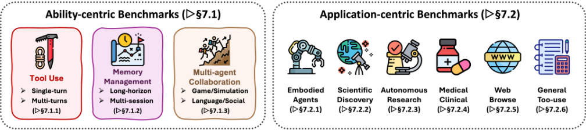
多轮工具调用。多轮工具调用为真实世界应用提供了更贴近实际的模拟，其中智能体自主选择并编排工具以解决复杂任务。ToolAlpaca [204] 是这一方向的最早尝试之一，它利用多智能体模拟，从 50 个不同类别中超过 400 个真实世界 API 生成了 3,938 个工具调用实例。SambaNova-ToolBench [693] 提出了一个以面向真实世界任务的软件工具操作为中心的基准测试，其中包含不同复杂程度的 API，用于测试智能体能力。API-Bank [694] 提供了一个包含来自 2,138 个 API 的 1,888 段工具调用对话的数据集，以及一个包含 73 个 API 和 314 个工具调用测试用例的可运行评估系统。UltraTool [695] 从六个维度评估工具调用能力：规划意识、规划能力、创建、工具调用意识、工具选择和工具使用。该 benchmark 涵盖 22 个领域，包含 2,032 个工具，并提供 5,824 个评估样本。ToolFlow 通过强调长期规划而区别于以往的 benchmark。它包含 224 个由专家精心策划的任务，涉及 107 个真实世界工具，突出了目标分解与多步决策方面的挑战。最近，MTU-Bench [696] 提出了一个面向多轮、多工具场景的多粒度基准测试，并发布了 MTU-Instruct，这是一个包含 54,798 段对话、涉及 136 个工具的大规模指令数据集。m & m's 提出了一个包含超过 4,000 个多步骤、多模态任务的基准测试，涉及 33 个工具，包括多模态模型、公共 API 和图像处理模块。它还提供了一个包含 1,565 个任务计划的高质量子集，这些计划经过人工验证且可端到端执行。
65
为了系统地评估智能体（Agent）通过交互获取信息的能力，近期的基准测试（benchmark）将搜索建模为序贯推理问题，并可大致分为单模态与多模态两类设置，二者在证据来源的性质、交互空间以及接地（grounding）要求上有所不同。
单模态搜索。近期的单模态智能体搜索基准测试日益将信息获取构建为一个序贯的、决策驱动的过程，强调规划、交互与证据综合。例如，WebWalker [697] 强调结构化的网站遍历，将搜索显式建模为在相互关联的页面之间协调进行的横向探索与纵向深挖。为了反映真实的开放世界信息获取，InfoDeepSeek [698] 引入了一个动态 Web 设置，其中答案可验证但未经人工筛选，凸显了对噪声和分布偏移的鲁棒性。若干基准测试沿时间与信息维度对搜索进行了扩展：Mind2Web 2 [50] 聚焦于长时程浏览与基于引用的综合，而 RAVine [699] 则在答案质量之外补充了过程级效率与交互保真度的考量。与之互补的是，WideSearch [700] 与 DeepWideSearch [701] 区分了面向广度的大规模事实聚合与面向深度的多跳推理，揭示了同时优化覆盖范围与推理连贯性的困难。领域特定的基准测试进一步强调在严格正确性约束下的可靠性：MedBrowseComp [702] 面向临床决策支持，要求智能体整合异构且可能相互冲突的医学证据；而 FinAgentBench [703] 通过文档类型选择与细粒度段落定位，评估金融分析中以检索为中心的推理。最后，LocalSearchBench [704] 将智能体搜索落地于现实世界的本地服务，评估基于大型结构化数据库的多约束、多实体推理。总体而言，这些基准测试围绕规划深度、交互质量、证据整合与现实世界保真度重新定义了智能体搜索的评估方式，为基于语言的智能体中以搜索为中心的推理提供了更为全面的评估。
多模态搜索。近期关于多模态 Agent 式搜索的基准测试已超越静态多模态问答，转而系统地评估 Agent 在现实约束下主动检索、浏览并对异构信息源进行推理的能力。MMSearch [705] 及其扩展 MMSearch-Plus [706] 等基准测试将多模态搜索构建为一个端到端过程，其中 Agent 必须解释多模态查询，并通过联合利用文本与视觉证据来综合得出答案，同时显式建模不同的输入-输出模态配置。作为对这一设定的补充，MMBrowseComp [707] 将“难以寻找、易于验证”（hard-to-find, easy-to-verify）范式适配到多模态网络环境中，强制要求对图像的依赖，以防止仅靠文本即可完成的捷径做法，并在开放网络浏览过程中对多模态证据锚定（grounding）进行压力测试。BEARCUBS [708] 进一步关注真实网络场景中使用计算机的 Agent，要求显式的交互轨迹和多模态操作（例如视频或 3D 导航），从而不仅评估检索准确性，还评估程序性能力。在转向领域特定且经工具增强的场景方面，PaperArena [709] 在科学工作流中评估多模态 Agent 式搜索，其中 Agent 必须协调 PDF 解析、图表理解、数据库查询和网络搜索，以回答研究级问题。最后，Video-BrowseComp [710] 和 VideoDR [711] 将 Agent 式搜索扩展到以视频为中心的场景，要求 Agent 从视频中提取视觉-时序线索，并借助开放网络证据迭代验证假设，同时通过精心设计的约束确保对视频与外部检索的双重依赖。总体而言，这些基准测试勾勒出一条清晰的演进路径，即将多模态 Agent 作为交互式研究者加以评估，并将规划、工具调用和多模态证据整合凸显为 Agent 式搜索中的一等能力。
66
Agent 的一个显著优势在于其能够利用记忆来实现准确的长期表现和强大的推理能力。这一能力可以从两个互补的视角加以评估。第一个视角关注记忆管理（memory management），反映 Agent 整合、组织和检索长期记忆的有效程度。第二个视角关注记忆利用（memory utilization），衡量 Agent 利用历史信息以支持规划和有依据反馈的能力。在本节中，我们将分别从这两个方面讨论相关基准测试。
从记忆管理的视角来看，现有基准测试可大致分为长程情景记忆（LongHorizon Episodic Memory）和多会话召回（Multi-session Recall）两类，具体取决于文本上下文是由单个连续的长篇输入构成，还是由多个不连续的对话会话构成。
长程情景记忆（Long-Horizon Episodic Memory）。这一类别针对具有部分可观测性和延迟奖励的单情景任务，要求 Agent 在较长的时间跨度内存储和检索信息。该领域的基准测试评估长上下文中的记忆保持、检索和推理能力。PerLTQA [712] 模拟个性化对话，其中 Agent 利用长期人设记忆和事件记忆来回答问题。该基准包含 8.5K 个问答（QA）对，并评估记忆分类、检索排序和合成保真度。ELITRBench [713] 在含噪的会议转录文本上测试 QA 任务，其中相关证据可能出现得远早于查询本身。模型通过 GPT-4 在各种自动语音识别（ASR）噪声水平和对话设置下进行评分。与此同时，Multi-IF [714] 和 MultiChallenge [715] 专注于多轮指令遵循。Multi-IF [714] 涵盖 8 种语言的 4.5K 个三轮对话，评估基于严格与宽松两种指令准确率。MultiChallenge [715] 使用 273 个精心整理的对话和二元通过/失败评估，测试四种记忆密集型现象：保持、推理、编辑和连贯性。TurnBench-MS [716] 在 540 个符号逻辑游戏中评估多步推理，追踪胜率、轮次级准确率和验证器使用情况。StoryBench [717] 将记忆塑造为交互式叙事中的决策制定，其中 Agent 必须记住先前的选择才能推进剧情。该基准评估决策准确率、重试次数和运行时效率。MemBench [718] 在参与式和观察式两种设置下，跨 60K 个情景测试事实性记忆与反思性记忆，并提供准确率、召回率、容量和检索速度等指标。MMRC [719] 开发了一个专注于单轮多模态对话的多模态记忆基准测试。总体而言，这些基准测试强调结构化的记忆需求，其指标不仅捕捉任务成功与否，还捕捉记忆精度、合成质量以及长上下文压力下的鲁棒性。
多会话召回（Multi-session Recall）。多会话召回聚焦于多情节任务，在这类任务中，Agent 必须跨独立会话保持并整合知识，从而支持终身适应并缓解灾难性遗忘。一系列近期的基准测试在真实的长程交互场景下对这一能力进行了系统探究。LOCOMO [322] 在跨越 19 个会话的对话上评估 LLM Agent 的持续对话记忆能力，所采用的任务包括多跳问答（multi-hop QA）、事件摘要和多模态响应生成。MemSim [720] 提出了一个基于模拟器的框架，涵盖日常生活领域中超过 2,900 条合成轨迹，通过准确性、多样性和合理性分数评估跨会话的事实保持能力。LONGMEMEVAL [323] 在五个子任务上对助手进行基准测试：信息抽取、多会话推理、时序推理、知识更新和弃答，其对话历史跨度高达 1.5M token，并采用 GPT-4 判定的准确率和检索召回率作为指标。REALTALK [721] 提供了为期 21 天的真实人类对话，每对对话者包含 17K token，从而能够通过多跳问答和情感锚定指标评估记忆探测与人格模拟。此外，MemoryAgentBench [722] 在多个数据集上统一了测试时学习（test-time learning）、冲突解决和长程理解等多种记忆任务，并采用分类准确率、部分匹配 F1 和 ROUGE 等任务特定指标。Mem-Gallery [310] 提出了一个多模态长期记忆评估基准测试，系统性地覆盖了广泛的记忆管理与利用场景。最后，Evo-Memory [25] 提出了一个基准测试和统一评估协议，用于衡量测试时学习中的经验复用。总体而言，这些基准测试凸显了跨会话动态记忆整合的重要性，并在事实召回、适应与推理方面提供了全面评估。
67
从记忆利用的视角出发，我们详细讨论了那些评估 Agent 利用历史信息支持规划与反馈能力的基准测试。
规划与反馈。针对规划与反馈的基准测试主要评估 Agent 能否有效利用记忆来支持基于环境反馈的多步规划，并在长时间交互中保持连贯的内部状态。首先，ALFWorld [48] 采用交互式环境来评估多步规划的一致性，要求 Agent 在执行动作的过程中累积观察结果，并在整个执行过程中维持潜在的内部状态。此外，PlanBench [723] 和 ACPBench [724] 等形式化规划基准测试评估在明确定义的动态环境中的规划能力，检验 Agent 能否正确推理动作的前提条件、效果、可达性以及整体规划的有效性。TEXT2WORLD [725] 将碎片化的文本描述整合为连贯且可执行的世界模型，评估将历史事实持续整合到结构化规划表示中的能力。较新的基准测试更加重视反馈整合以及非平稳条件下的规划。例如，REALM-Bench [726] 在真实制造场景中引入动态扰动，要求 Agent 记住先前的承诺，并在底层假设被违反时重新规划；而 TravelPlanner [727] 则关注在受限且不断演变的信息条件下构建准确的行程安排。最后，FlowBench [728] 和 UrbanPlanBench [729] 分别在流程化和领域特定的场景中评估规划性能，在这些场景中，Agent 必须保留对话或政策上下文，并在各个决策步骤中一致地加以应用。总体而言，这些基准测试超越了一次性规划生成，系统地考察 Agent 能否利用历史信息来支持持续规划、自适应反馈整合以及随时间推移的迭代决策修正。
为了评估超越孤立推理的协作、竞争与决策能力，近期的基准测试将多智能体系统置于交互式环境中。这些工作大致涵盖基于游戏的评估、以仿真为中心的现实场景，以及由语言驱动的社会推理任务。
基于游戏的强化学习评估。基于游戏的强化学习评估基准利用经典与新颖的游戏环境，系统地比较多智能体强化学习（RL）算法在合作与对抗设定下的性能。MAgent [730] 支持在可定制的网格世界（grid-world）中开展追捕与资源竞争等大规模多智能体场景，评估个体累积奖励以及资源占用率等竞争性指标。Pommerman [731] 将经典的炸弹人（Bomberman）游戏改造用于合作与对抗交互，通过胜率、存活时长和击杀自杀比来量化性能。SMAC [732] 聚焦于《星际争霸 II》（StarCraft II）场景中的去中心化微操挑战，通过胜率、平均伤害输出和阵型离散度来评估团队成败。MineLand [733] 将 Minecraft 用作大规模多智能体协作的现实生态仿真，最多支持 64 个 Agent 在部分可观测条件下合作以满足生理需求。TeamCraft [734] 同样采用 Minecraft 对具身多模态 Agent 进行基准测试，这些 Agent 需要解读视觉、文本和环境提示，以协作完成 55,000 个程序化生成的任务实例。Melting Pot [735] 评估 Agent 在多样化社会困境环境中的零样本泛化能力，采用人均回报、社会福利和不平等指数等指标。BenchMARL [736] 在多个场景（如 SMACv2、VMAS、MPE）中提供标准化的算法比较，衡量收敛速率、最终性能和超参数敏感性。最后，Arena [737] 涵盖了跨多种复杂度的合作与对抗游戏的完整套件，评估个体回报、集体社会福利以及涌现的通信协议。
68
以仿真为中心的真实世界评估。以仿真为中心的真实世界基准测试模拟真实或伪真实的环境，强调可扩展性、部分可观测性和动态规划。SMARTS [738] 提供了一个可扩展的多智能体驾驶平台，面向汇流与交叉路口等真实交通场景，其评估基于碰撞率、任务完成度和 Agent 行为分布。Nocturne [739] 利用 Waymo 轨迹提供高吞吐量、部分可观测的驾驶仿真，在交叉路口和环岛等任务中测试协调能力与类人行为。MABIM [740] 对多级库存管理进行基准测试，模拟合作与竞争并存的零售动态，并通过多种库存设置下的利润指标进行评估。IMP-MARL [741] 针对基础设施巡检与维护调度，衡量大规模系统中的风险降低与成本效率。POGEMA [742] 聚焦于网格环境中的去中心化多智能体路径规划，跟踪成功率、路径效率以及大规模协调能力。INTERSECTIONZOO [743] 研究交叉路口合作式生态驾驶的上下文强化学习（RL），利用交通仿真评估排放与行程时间性能。REALM-Bench [726] 引入了从物流到救灾的真实世界规划任务，包含动态扰动和多线程依赖关系，并通过规划质量、适应性和约束满足度进行评估。这些基准测试共同反映了在规模化、不确定性、协调与动态适应方面的挑战，为真实世界多智能体系统提供了严格的测试平台。
语言、通信与社会推理。语言、通信与社会推理领域的基准测试探索多智能体通信协议、心智理论（Theory-of-Mind）推理、博弈论交互以及语言驱动的协调。LLM-Coordination [744] 通过合作型游戏（例如 Hanabi、Overcooked-AI）考察 LLM Agent 的协作推理与联合规划能力，并以综合得分和细粒度协调问题准确率进行度量。AVALONBENCH [745] 利用社交推理游戏 Avalon 评估基于语言的角色条件推理，其数据集包含数千段五人玩家对话，并采用胜率、角色准确率和投票动态等指标。Welfare Diplomacy [746] 将经典游戏 Diplomacy 扩展为广义和（general-sum）福利谈判，使用包含 50 局游戏的数据集来量化联盟稳定性与面向福利的策略推理。MAgIC [747] 涵盖社交推理与经典困境（例如 Chameleon、囚徒困境），采用人工构建的场景数据集对推理、欺骗、协调与理性进行基准测试。BattleAgentBench [19] 评估策略游戏环境中基于语言的合作与竞争动态，在多样化地图数据集上对导航准确率、Agent 交互和可利用性进行评分。COMMA [748] 通过涉及视觉-语言协调的协作解谜任务评估多模态沟通推理，在数千个场景中以 grounding 准确率、隐私合规性和对话有效性进行度量。IntellAgent [749] 在零售和航空领域引入合成的对话式 AI 任务，生成大规模受政策约束的对话数据集，并以对话成功率、错误频率和政策遵循度进行评估。最后，MultiAgentBench [21] 在 Minecraft 建造、编程和议价等任务上提供全面评估，采用动态关键绩效指标和由 LLM 评分的沟通质量，覆盖多种多智能体拓扑结构与场景。
69
尽管以机制为中心的基准测试有助于隔离评估各项单独能力，但现实世界的部署要求这些能力在真实约束下协同工作，例如部分可观测性、长时程依赖以及安全关键决策。因此，我们接下来回顾应用层面的基准测试，它们在代表性环境中评估端到端的智能体性能，其任务共同考验感知、推理、动作执行与协调能力。
在本小节中，我们回顾旨在评估智能体推理系统在各个领域中应用层面性能的基准测试。这些基准测试评估智能体在真实或高影响力的任务场景中感知、推理和行动的能力。我们根据应用环境将讨论组织为六个类别：具身智能体（Embodied Agents）、科学发现智能体（Scientific Discovery Agents）、自主研究智能体（Autonomous Research Agents）、医疗与临床智能体（Medical and Clinical Agents）、Web 智能体（Web Agents）以及工具调用智能体（Tool-Use Agents）。每个子小节介绍代表性的基准测试，并描述其设计动机、任务形式和评估指标。
此类基准测试评估与物理或模拟环境交互的智能体，要求其具备接地（grounding）、感知与动作规划能力。AgentX [750] 提供了一套多样的驾驶与运动领域的视觉-语言具身任务，智能体必须利用来自视频的多模态信息进行决策，其重点在于对存在遮挡、时间间隙或干扰物的场景进行推理。BALROG [751] 构建了一个以强化学习为中心的框架，用于在游戏环境中对智能体规划进行基准测试，重点关注指令遵循、时间抽象与错误纠正。ALFWorld [48] 在基于文本的 3D 环境中将语言指令与物体交互联系起来，评估基于感知的执行能力。AndroidArena [752] 面向基于图形用户界面（GUI）的移动任务，智能体必须利用视觉-语言理解来执行表单填写和应用导航等操作。StarDojo [753] 利用开放式的 Stardew Valley 游戏来研究社交规划与基于角色的协调。MindAgent [754] 与 NetPlay [755] 构建了多人游戏测试平台，用于对不确定性下的涌现社会推理与协商进行基准测试。OSWorld [756] 提供了一个模拟桌面环境，包含多样的跨应用生产力任务，例如打开文件、转换格式和修改文档。这些环境挑战智能体在动态且通常部分可观测的场景中协调感知、规划与符号化动作。
科学基准测试旨在检验智能体在知识获取、假设生成与实验自动化方面的能力。DISCOVERYWORLD [757] 引入了一个虚拟实验室，智能体可在其中通过模拟的工具与仪器探索生物学、化学和物理学中的科学现象。ScienceWorld [758] 聚焦于基础科学实验，采用文本指令与环境交互的方式，要求逐步进行假设检验。ScienceAgentBench [759] 基于真实的科学论文构建基准测试，将代码实现、图表生成和变量提取等任务转化为可执行的子任务，以评估智能体自动化科研流程的能力。The AI Scientist [651] 模拟了完整的端到端科研流程，智能体在其中执行文献综述、方法撰写、实验执行和同行评审模拟。LAB-Bench [760] 在涉及基因序列推理与实验规划的任务上评估面向生物学的智能体。MLAgentBench [761] 对智能体自主训练、评估和调优机器学习模型的能力进行基准测试，提供了贴近现实的实验工作流。这些基准测试共同考察了智能体在半结构化数据环境下的开放式推理、长程规划与科学锚定能力。
70
这一类别对面向长程工作流的智能体进行基准测试，涵盖通用科研、办公或规划任务。WorkArena [762] 及其扩展版本 WorkArena++ [763] 提出了企业任务基准测试，其中智能体必须完成基于工单的工作流，涉及检索、摘要以及跨文档协调。OfficeBench [764] 模拟了一个办公生产力软件套件环境，任务包括创建会议备忘录、修改电子表格和回复电子邮件，强调目标分解与工具选择。PlanBench [723] 和 FlowBench [728] 使用抽象化的任务图和结构化依赖关系来测试通用工作流规划能力。ACPBench [724] 在“助手-协作者-规划者”三元组中评估智能体，跟踪其在混合角色层级中的表现。TRAIL [765] 关注基于 LLM 的系统中的多智能体轨迹调试与错误归因 [766]，为推理链提供密集标注。CLIN [767] 引入了终身少样本学习基准测试，智能体在其中适应分布偏移与任务演化。Agent-as-a-Judge [768] 研究同行评审式的评估方式，由智能体对其他智能体输出的推理链与正确性进行评分。InfoDeepSeek [698] 衡量开放域问答与综合任务中的信息搜寻能力。总体而言，这些基准测试反映了在涉及抽象、迭代与评估的复杂知识工作流中，对智能体推理日益增长的需求。
这些基准测试考察智能体基于临床知识、患者数据以及多模态生物医学来源进行推理的能力。AgentClinic [769] 引入了一个虚拟医院环境，智能体在其中基于患者症状和医学影像做出诊断决策。MedAgentBench [770] 在一个以标准化考试为基础的多格式基准测试中结合了医学问答、患者模拟与检索任务。MedAgentsBench [771] 评估结构化与非结构化数据上的多跳医学推理，并依据正确性与证据一致性对智能体进行评分。EHRAgent [581] 对在结构化电子健康记录（EHR）表格与临床笔记上进行工作的智能体进行基准测试，这些智能体需完成诊断编码预测、用药推理等任务。MedBrowseComp [702] 聚焦于基于浏览的医学问答，智能体必须在多个网页之间检索并验证信息。ACC [772] 通过检索、幻觉检测以及基于引用的支持性评估来探索可信赖的医学智能体。MedAgents [601] 采用协作式多智能体对话设置来模拟患者-医生-护士交互，并对流畅性与事实准确性进行评分。GuardAgent [773] 提出了一种临床隐私防护智能体，并在 EHR 与网站表单上构建了结构化的风险检测基准测试。这些数据集强调真实世界临床部署场景中的正确性、可信赖性与安全性。
Web 智能体在真实的浏览环境中运行，并以解析页面布局、执行操作和处理动态内容的能力作为基准测试（benchmark）的评估对象。WebArena [45] 提出了一个基于浏览器的基准测试套件，包含 90 多个涵盖购物、预订等领域的真实网站，智能体在其中通过结构化目标和基于点击的 API 完成任务。VisualWebArena [46] 在此基础上引入了视觉渲染，要求智能体解析网页图像，并将指令与渲染后的组件对齐。WebVoyager [638] 提出了目标驱动的导航，其长程任务涉及多页面遍历与回溯。Mind2Web [50] 面向跨领域 Web 自动化，提供了多任务数据集和丰富的接地（grounding）标注。WebCanvas [774] 支持细粒度的布局操作，例如拖放（drag-drop）和调整大小（resize）等动作。WebLINX [775] 通过浏览、摘要与答案合成来模拟信息收集任务。BrowseComp-ZH [776] 借助中文网站带来了语言与基础设施的多样性，在多语言理解方面对智能体构成挑战。LASER [777]、WebWalker [697] 和 AutoWebBench [605] 关注 Web 导航中的结构化页面表示、实时动作执行与策略学习。这些基准测试凸显了 Web 环境下感知、接地与策略泛化方面的挑战。
71
这一组基准测试强调 LLM 智能体调用、协调工具与 API 并对其进行推理的能力。GTA [691] 提出了一个以用户查询和已部署软件工具为基础的现实工具调用基准测试，涵盖从图像生成到分析仪表盘的各类 API。NESTFUL [778] 评估需要跨工具链进行组合式规划的嵌套 API 调用任务。CodeAct [99] 模拟可执行的函数调用，并从解析、组合与运行时准确性方面评估智能体。RestGPT [225] 通过由粗到细的规划流水线将 LLM 与 RESTful API 相连接，并在 60 余种工具类型上进行了测试。Search-o1 [23] 将工具使用建模为顺序检索，其基准测试涵盖代码搜索、PDF 查询与科学工具使用。Agentic RL [779] 提出了一个可访问工具接口的强化学习智能体，并设置了日历调度与翻译等评估任务。ActionReasoningBench [780] 利用结构化动作语法，对智能体推理动作副作用与下游后果的能力进行基准测试。R-Judge [781] 引入了安全判断基准测试，其中智能体需要评估涉及工具的风险计划。这些数据集共同反映了工具增强的智能体环境日益提升的复杂性与组合性。
在本节中，我们重点探讨源于以下方面的开放性问题：以用户为中心的个性化、长时程交互与信用分配、基于世界模型的推理、多智能体协作与训练、潜在内部推理，以及在真实世界环境中自主运行的智能体系统的治理。
以用户为中心的智能体推理（user-centric agentic reasoning）[782, 783] 指的是智能体通过随时间对用户特征、偏好和交互历史进行建模，使其推理和行动适应特定个体用户的能力。以用户为中心的智能体不再优化固定的、由任务定义的目标，而是将用户视为环境的一部分，并通过长期的多轮交互持续调整其策略。这要求智能体动态推断不断演变的用户意图，适应目标和行为风格的变化，并随着对话的推进根据显式或隐式的用户反馈调整决策。至关重要的是，以用户为中心的智能体推理涉及在短期任务奖励与长期用户体验、满意度和信任之间进行权衡，这引入了非平稳目标以及超出常规智能体推理设定的长时程信用分配挑战。
72
智能体推理的一个核心开放性挑战，是在长时程交互中实现稳健的长时程规划与信用分配。尽管 ReAct 和 Tree of Thought 等方法提升了短时程推理能力 [5, 4]，但在长任务中误差仍会迅速累积放大，Voyager 等具身智能体便体现了这一点 [36]。WebRL 和 Agent-R1 等强化学习（RL）训练的智能体在真实环境中提升了性能，但它们依赖于高度工程化、特定领域的奖励，并且在很大程度上将各个回合独立处理 [437, 28]。较新的过程感知方法试图构建更细粒度的信用信号 [784, 15, 785]，但仍然局限于特定环境。一个核心的开放问题是如何在 token、工具调用、技能和记忆更新之间分配信用，并将此类学习泛化到长序列的回合与任务之中。
基于世界模型的智能体 [786, 316] 旨在通过支持内部模拟与前瞻（lookahead）来缓解短视推理。诸如 DreamerV3 等基于模型的 RL 系统展示了想象推演（imagined rollouts）对长时程控制的有效性 [787]，而近期基于大语言模型（LLM）的智能体则将世界模型适配到网页、代码和图形用户界面（GUI）环境中 [788, 786, 789, 790]。然而，当前的设计依赖于特设（ad hoc）的表示，且通常在短时程或特定环境的数据上进行训练，这引发了对校准与泛化能力的担忧。仅有少数工作探索在长时间尺度上让世界模型与智能体协同演化 [610, 791]。一个开放问题是如何在非平稳环境中联合训练、更新和评估世界模型，以及如何评估它们对下游规划可靠性的因果影响。
多智能体协作已成为通过角色专业化与分工来扩展智能体推理的强大范式 [67, 792, 66]。虽然基于辩论和角色的系统往往优于单个智能体，但大多数协作结构仍然是人工设计的。近期的多智能体强化学习（RL）方法开始将协作本身视为一种可训练的技能 [409, 413, 26]，但群体层面的信用分配仍然知之甚少。扩展到更大的智能体群体进一步带来了拓扑自适应、协调开销和安全性方面的挑战 [793, 794, 766]。一个关键的开放问题是如何学习自适应、可解释的协作策略，使其在部分可观测和对抗条件下保持鲁棒。
潜在智能体推理（latent agentic reasoning）[795, 796, 441] 探讨在内部潜在空间而非显式自然语言或符号轨迹中执行规划、决策与协作。近期研究表明，潜在推理能够提升效率与可扩展性，但代价是可解释性和可控性的降低。在智能体场景中，这带来了额外的挑战，包括如何将潜在推理与外部目标、工具、智能体和记忆系统对齐。当中间推理步骤无法从外部观测时，对失败进行诊断变得尤为困难。一个开放问题是如何设计学习目标、探测方法和评估基准测试，使潜在智能体推理既有效又可审计。
治理（Governance）是智能体推理系统面临的一项贯穿性挑战，这类系统在工具、环境和其他智能体之上自主行动。除了标准的大语言模型（LLM）安全问题之外，智能体系统由于长时程规划、持久记忆以及现实世界动作执行而引入了新的风险 [797]。故障可能由跨时间、跨组件的交互引发，这使得归因和审计变得困难。现有的基准测试（benchmark）和护栏主要关注短时程行为 [773, 781]，而对规划阶段故障和多智能体动态的探索仍然不足。一个核心的开放问题是开发治理框架，在现实的部署条件下共同应对模型层面的对齐、智能体层面的策略以及生态系统层面的交互。
73